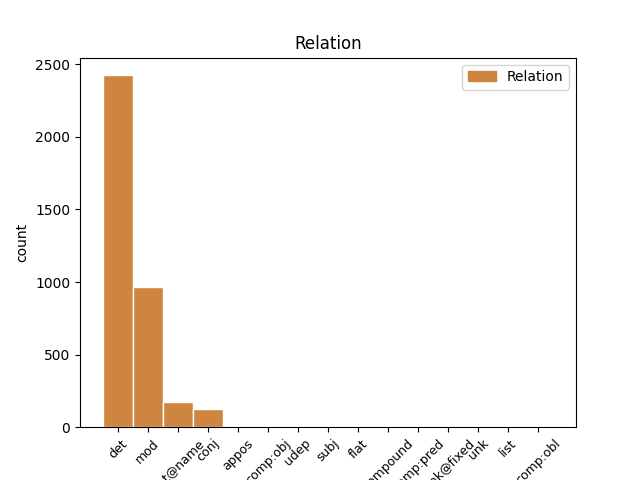
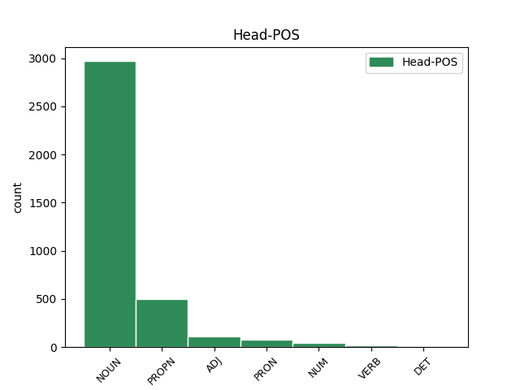
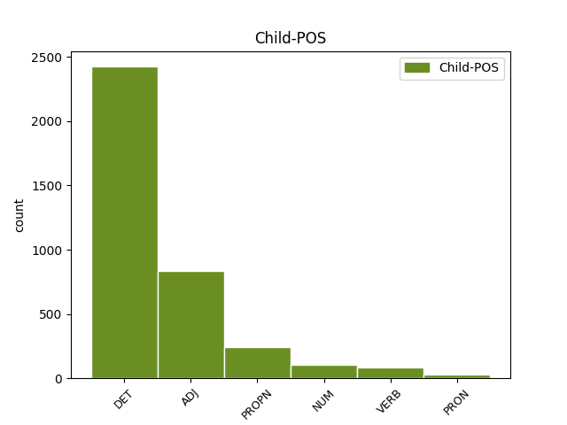

Distribution of features within this leaf



Agreement Rules sorted by frequency.
- When the dependent token is the determiner(det) of the head token, and the head token is NOUN and the dependent token is DET.
1 Segundo _ _ _ _ 0 _ _ _
2 Cagiao _ _ _ _ 0 _ _ _
3 , _ _ _ _ 0 _ _ _
4 isto _ _ _ _ 0 _ _ _
5 foi _ _ _ _ 0 _ _ _
6 o _ _ _ _ 0 _ _ _
7 que _ _ _ _ 0 _ _ _
8 dificultou _ _ _ _ 0 _ _ _
9 os _ _ _ _ 0 _ _ _
10 que _ _ _ _ 0 _ _ _
11 ían _ _ _ _ 0 _ _ _
12 ser _ _ _ _ 0 _ _ _
13 derradeiros _ _ _ _ 0 _ _ _
14 pasos _ _ _ _ 0 _ _ _
15 de _ _ _ _ 0 _ _ _
16 a _ _ _ _ 0 _ _ _
17 regulación _ _ _ _ 0 _ _ _
18 laboral _ _ _ _ 0 _ _ _
19 de _ _ _ _ 0 _ _ _
20 as _ _ _ _ 0 _ _ _
21 antigas _ _ _ _ 0 _ _ _
22 Astano _ _ _ _ 0 _ _ _
23 e _ _ _ _ 0 _ _ _
24 Bazán _ _ _ _ 0 _ _ _
25 , _ _ _ _ 0 _ _ _
26 denominada _ _ _ _ 0 _ _ _
27 Navantia _ _ _ _ 0 _ _ _
28 dende _ _ _ _ 0 _ _ _
29 esta este DET Edfs Gender=Fem|Number=Sing|PronType=Dem 30 det _ _
30 semana semana NOUN Scfs Gender=Fem|Number=Sing 0 _ _ _
31 . _ _ _ _ 0 _ _ _
1 De _ _ _ _ 0 _ _ _
2 dar _ _ _ _ 0 _ _ _
3 se _ _ _ _ 0 _ _ _
4 esa _ _ _ _ 0 _ _ _
5 prexubilación _ _ _ _ 0 _ _ _
6 por _ _ _ _ 0 _ _ _
7 la o DET Ddfs Definite=Def|Gender=Fem|Number=Sing|PronType=Art 8 det _ _
8 SEPI SEPI PROPN Zgfs Gender=Fem|Number=Sing 0 _ _ _
9 , _ _ _ _ 0 _ _ _
10 tería _ _ _ _ 0 _ _ _
11 que _ _ _ _ 0 _ _ _
12 ser _ _ _ _ 0 _ _ _
13 mediante _ _ _ _ 0 _ _ _
14 un _ _ _ _ 0 _ _ _
15 expediente _ _ _ _ 0 _ _ _
16 aberto _ _ _ _ 0 _ _ _
17 a _ _ _ _ 0 _ _ _
18 todos _ _ _ _ 0 _ _ _
19 os _ _ _ _ 0 _ _ _
20 que _ _ _ _ 0 _ _ _
21 cumpran _ _ _ _ 0 _ _ _
22 52 _ _ _ _ 0 _ _ _
23 anos _ _ _ _ 0 _ _ _
24 e _ _ _ _ 0 _ _ _
25 con _ _ _ _ 0 _ _ _
26 garantía _ _ _ _ 0 _ _ _
27 de _ _ _ _ 0 _ _ _
28 cobertura _ _ _ _ 0 _ _ _
29 de _ _ _ _ 0 _ _ _
30 as _ _ _ _ 0 _ _ _
31 vacantes _ _ _ _ 0 _ _ _
32 " _ _ _ _ 0 _ _ _
33 . _ _ _ _ 0 _ _ _
1 Emilio emilio PROPN Spm0 Gender=Masc 0 _ _ _
2 Cagiao cagiao PROPN Spm0 Gender=Masc 1 flat@name _ SpaceAfter=No
3 , _ _ _ _ 0 _ _ _
4 secretario _ _ _ _ 0 _ _ _
5 de _ _ _ _ 0 _ _ _
6 a _ _ _ _ 0 _ _ _
7 CIG _ _ _ _ 0 _ _ _
8 en _ _ _ _ 0 _ _ _
9 Ferrol _ _ _ _ 0 _ _ _
10 , _ _ _ _ 0 _ _ _
11 di _ _ _ _ 0 _ _ _
12 que _ _ _ _ 0 _ _ _
13 " _ _ _ _ 0 _ _ _
14 e _ _ _ _ 0 _ _ _
15 unha _ _ _ _ 0 _ _ _
16 verdadeira _ _ _ _ 0 _ _ _
17 vergonza _ _ _ _ 0 _ _ _
18 que _ _ _ _ 0 _ _ _
19 se _ _ _ _ 0 _ _ _
20 estea _ _ _ _ 0 _ _ _
21 xogando _ _ _ _ 0 _ _ _
22 con _ _ _ _ 0 _ _ _
23 os _ _ _ _ 0 _ _ _
24 traballadores _ _ _ _ 0 _ _ _
25 por _ _ _ _ 0 _ _ _
26 non _ _ _ _ 0 _ _ _
27 dar _ _ _ _ 0 _ _ _
28 lle _ _ _ _ 0 _ _ _
29 solución _ _ _ _ 0 _ _ _
30 a _ _ _ _ 0 _ _ _
31 o _ _ _ _ 0 _ _ _
32 que _ _ _ _ 0 _ _ _
33 eles _ _ _ _ 0 _ _ _
34 chaman _ _ _ _ 0 _ _ _
35 " _ _ _ _ 0 _ _ _
36 flecos _ _ _ _ 0 _ _ _
37 " _ _ _ _ 0 _ _ _
38 , _ _ _ _ 0 _ _ _
39 cando _ _ _ _ 0 _ _ _
40 a _ _ _ _ 0 _ _ _
41 verdadeira _ _ _ _ 0 _ _ _
42 realidade _ _ _ _ 0 _ _ _
43 é _ _ _ _ 0 _ _ _
44 por _ _ _ _ 0 _ _ _
45 que _ _ _ _ 0 _ _ _
46 os _ _ _ _ 0 _ _ _
47 de _ _ _ _ 0 _ _ _
48 Comisións _ _ _ _ 0 _ _ _
49 queren _ _ _ _ 0 _ _ _
50 prexubilar _ _ _ _ 0 _ _ _
51 tamén _ _ _ _ 0 _ _ _
52 algúns _ _ _ _ 0 _ _ _
53 traballadores _ _ _ _ 0 _ _ _
54 de _ _ _ _ 0 _ _ _
55 as _ _ _ _ 0 _ _ _
56 compañias _ _ _ _ 0 _ _ _
57 auxiliares _ _ _ _ 0 _ _ _
58 con _ _ _ _ 0 _ _ _
59 o _ _ _ _ 0 _ _ _
60 pretexto _ _ _ _ 0 _ _ _
61 de _ _ _ _ 0 _ _ _
62 que _ _ _ _ 0 _ _ _
63 poden _ _ _ _ 0 _ _ _
64 ter _ _ _ _ 0 _ _ _
65 garantía _ _ _ _ 0 _ _ _
66 de _ _ _ _ 0 _ _ _
67 emprego _ _ _ _ 0 _ _ _
68 . _ _ _ _ 0 _ _ _
1 De _ _ _ _ 0 _ _ _
2 dar _ _ _ _ 0 _ _ _
3 se _ _ _ _ 0 _ _ _
4 esa _ _ _ _ 0 _ _ _
5 prexubilación _ _ _ _ 0 _ _ _
6 por _ _ _ _ 0 _ _ _
7 la _ _ _ _ 0 _ _ _
8 SEPI _ _ _ _ 0 _ _ _
9 , _ _ _ _ 0 _ _ _
10 tería _ _ _ _ 0 _ _ _
11 que _ _ _ _ 0 _ _ _
12 ser _ _ _ _ 0 _ _ _
13 mediante _ _ _ _ 0 _ _ _
14 un _ _ _ _ 0 _ _ _
15 expediente _ _ _ _ 0 _ _ _
16 aberto _ _ _ _ 0 _ _ _
17 a _ _ _ _ 0 _ _ _
18 todos _ _ _ _ 0 _ _ _
19 os _ _ _ _ 0 _ _ _
20 que _ _ _ _ 0 _ _ _
21 cumpran _ _ _ _ 0 _ _ _
22 52 52 NUM Ncdmp Gender=Masc|Number=Plur|NumType=Card 23 mod _ _
23 anos ano NOUN Scmp Gender=Masc|Number=Plur 0 _ _ _
24 e _ _ _ _ 0 _ _ _
25 con _ _ _ _ 0 _ _ _
26 garantía _ _ _ _ 0 _ _ _
27 de _ _ _ _ 0 _ _ _
28 cobertura _ _ _ _ 0 _ _ _
29 de _ _ _ _ 0 _ _ _
30 as _ _ _ _ 0 _ _ _
31 vacantes _ _ _ _ 0 _ _ _
32 " _ _ _ _ 0 _ _ _
33 . _ _ _ _ 0 _ _ _
1 De _ _ _ _ 0 _ _ _
2 dar _ _ _ _ 0 _ _ _
3 se _ _ _ _ 0 _ _ _
4 esa _ _ _ _ 0 _ _ _
5 prexubilación _ _ _ _ 0 _ _ _
6 por _ _ _ _ 0 _ _ _
7 la _ _ _ _ 0 _ _ _
8 SEPI _ _ _ _ 0 _ _ _
9 , _ _ _ _ 0 _ _ _
10 tería _ _ _ _ 0 _ _ _
11 que _ _ _ _ 0 _ _ _
12 ser _ _ _ _ 0 _ _ _
13 mediante _ _ _ _ 0 _ _ _
14 un _ _ _ _ 0 _ _ _
15 expediente expediente NOUN Scms Gender=Masc|Number=Sing 0 _ _ _
16 aberto abrir VERB V0p0ms Gender=Masc|Number=Sing|VerbForm=Part 15 mod _ _
17 a _ _ _ _ 0 _ _ _
18 todos _ _ _ _ 0 _ _ _
19 os _ _ _ _ 0 _ _ _
20 que _ _ _ _ 0 _ _ _
21 cumpran _ _ _ _ 0 _ _ _
22 52 _ _ _ _ 0 _ _ _
23 anos _ _ _ _ 0 _ _ _
24 e _ _ _ _ 0 _ _ _
25 con _ _ _ _ 0 _ _ _
26 garantía _ _ _ _ 0 _ _ _
27 de _ _ _ _ 0 _ _ _
28 cobertura _ _ _ _ 0 _ _ _
29 de _ _ _ _ 0 _ _ _
30 as _ _ _ _ 0 _ _ _
31 vacantes _ _ _ _ 0 _ _ _
32 " _ _ _ _ 0 _ _ _
33 . _ _ _ _ 0 _ _ _
1 O _ _ _ _ 0 _ _ _
2 téxtil _ _ _ _ 0 _ _ _
3 e _ _ _ _ 0 _ _ _
4 a _ _ _ _ 0 _ _ _
5 industria _ _ _ _ 0 _ _ _
6 gráfica _ _ _ _ 0 _ _ _
7 son _ _ _ _ 0 _ _ _
8 de _ _ _ _ 0 _ _ _
9 as o DET Ddfp Definite=Def|Gender=Fem|Number=Plur|PronType=Art 10 det _ _
10 poucas pouco PRON Infp Gender=Fem|Number=Plur|PronType=Ind 0 _ _ _
11 que _ _ _ _ 0 _ _ _
12 repuntan _ _ _ _ 0 _ _ _
13 . _ _ _ _ 0 _ _ _
1 O o DET Ddms Definite=Def|Gender=Masc|Number=Sing|PronType=Art 2 det _ _
2 téxtil téxtil ADJ A0ms Gender=Masc|Number=Sing 0 _ _ _
3 e _ _ _ _ 0 _ _ _
4 a _ _ _ _ 0 _ _ _
5 industria _ _ _ _ 0 _ _ _
6 gráfica _ _ _ _ 0 _ _ _
7 son _ _ _ _ 0 _ _ _
8 de _ _ _ _ 0 _ _ _
9 as _ _ _ _ 0 _ _ _
10 poucas _ _ _ _ 0 _ _ _
11 que _ _ _ _ 0 _ _ _
12 repuntan _ _ _ _ 0 _ _ _
13 . _ _ _ _ 0 _ _ _
1 Era _ _ _ _ 0 _ _ _
2 o _ _ _ _ 0 _ _ _
3 Ferrol _ _ _ _ 0 _ _ _
4 de _ _ _ _ 0 _ _ _
5 Pablo _ _ _ _ 0 _ _ _
6 Iglesias _ _ _ _ 0 _ _ _
7 , _ _ _ _ 0 _ _ _
8 Amador _ _ _ _ 0 _ _ _
9 Rei _ _ _ _ 0 _ _ _
10 , _ _ _ _ 0 _ _ _
11 Daniel _ _ _ _ 0 _ _ _
12 Niebla _ _ _ _ 0 _ _ _
13 , _ _ _ _ 0 _ _ _
14 Ricardo ricardo PROPN Spm0 Gender=Masc 0 _ _ _
15 Carvalho _ _ _ _ 0 _ _ _
16 Calero _ _ _ _ 0 _ _ _
17 e _ _ _ _ 0 _ _ _
18 Moncho moncho PROPN Spm0 Gender=Masc 14 conj _ _
19 Reboiras _ _ _ _ 0 _ _ _
20 , _ _ _ _ 0 _ _ _
21 e _ _ _ _ 0 _ _ _
22 non _ _ _ _ 0 _ _ _
23 era _ _ _ _ 0 _ _ _
24 o _ _ _ _ 0 _ _ _
25 de _ _ _ _ 0 _ _ _
26 Franco _ _ _ _ 0 _ _ _
27 que _ _ _ _ 0 _ _ _
28 , _ _ _ _ 0 _ _ _
29 aínda _ _ _ _ 0 _ _ _
30 así _ _ _ _ 0 _ _ _
31 , _ _ _ _ 0 _ _ _
32 tivo _ _ _ _ 0 _ _ _
33 a _ _ _ _ 0 _ _ _
34 súa _ _ _ _ 0 _ _ _
35 estatua _ _ _ _ 0 _ _ _
36 en _ _ _ _ 0 _ _ _
37 a _ _ _ _ 0 _ _ _
38 principal _ _ _ _ 0 _ _ _
39 praza _ _ _ _ 0 _ _ _
40 de _ _ _ _ 0 _ _ _
41 a _ _ _ _ 0 _ _ _
42 cidade _ _ _ _ 0 _ _ _
43 até _ _ _ _ 0 _ _ _
44 o _ _ _ _ 0 _ _ _
45 2002 _ _ _ _ 0 _ _ _
46 . _ _ _ _ 0 _ _ _
1 Era _ _ _ _ 0 _ _ _
2 o _ _ _ _ 0 _ _ _
3 Ferrol _ _ _ _ 0 _ _ _
4 de _ _ _ _ 0 _ _ _
5 Pablo _ _ _ _ 0 _ _ _
6 Iglesias _ _ _ _ 0 _ _ _
7 , _ _ _ _ 0 _ _ _
8 Amador _ _ _ _ 0 _ _ _
9 Rei _ _ _ _ 0 _ _ _
10 , _ _ _ _ 0 _ _ _
11 Daniel _ _ _ _ 0 _ _ _
12 Niebla _ _ _ _ 0 _ _ _
13 , _ _ _ _ 0 _ _ _
14 Ricardo _ _ _ _ 0 _ _ _
15 Carvalho _ _ _ _ 0 _ _ _
16 Calero _ _ _ _ 0 _ _ _
17 e _ _ _ _ 0 _ _ _
18 Moncho _ _ _ _ 0 _ _ _
19 Reboiras _ _ _ _ 0 _ _ _
20 , _ _ _ _ 0 _ _ _
21 e _ _ _ _ 0 _ _ _
22 non _ _ _ _ 0 _ _ _
23 era _ _ _ _ 0 _ _ _
24 o _ _ _ _ 0 _ _ _
25 de _ _ _ _ 0 _ _ _
26 Franco _ _ _ _ 0 _ _ _
27 que _ _ _ _ 0 _ _ _
28 , _ _ _ _ 0 _ _ _
29 aínda _ _ _ _ 0 _ _ _
30 así _ _ _ _ 0 _ _ _
31 , _ _ _ _ 0 _ _ _
32 tivo _ _ _ _ 0 _ _ _
33 a _ _ _ _ 0 _ _ _
34 súa _ _ _ _ 0 _ _ _
35 estatua _ _ _ _ 0 _ _ _
36 en _ _ _ _ 0 _ _ _
37 a _ _ _ _ 0 _ _ _
38 principal _ _ _ _ 0 _ _ _
39 praza _ _ _ _ 0 _ _ _
40 de _ _ _ _ 0 _ _ _
41 a _ _ _ _ 0 _ _ _
42 cidade _ _ _ _ 0 _ _ _
43 até _ _ _ _ 0 _ _ _
44 o o DET Ddms Definite=Def|Gender=Masc|Number=Sing|PronType=Art 45 det _ _
45 2002 2002 NUM Ncnms Gender=Masc|Number=Sing|NumType=Card 0 _ _ _
46 . _ _ _ _ 0 _ _ _
1 O _ _ _ _ 0 _ _ _
2 cuarto _ _ _ _ 0 _ _ _
3 de _ _ _ _ 0 _ _ _
4 o _ _ _ _ 0 _ _ _
5 tetrapléxico _ _ _ _ 0 _ _ _
6 , _ _ _ _ 0 _ _ _
7 con _ _ _ _ 0 _ _ _
8 os _ _ _ _ 0 _ _ _
9 seus _ _ _ _ 0 _ _ _
10 discos _ _ _ _ 0 _ _ _
11 , _ _ _ _ 0 _ _ _
12 os _ _ _ _ 0 _ _ _
13 seus _ _ _ _ 0 _ _ _
14 libros _ _ _ _ 0 _ _ _
15 , _ _ _ _ 0 _ _ _
16 e _ _ _ _ 0 _ _ _
17 a _ _ _ _ 0 _ _ _
18 súa _ _ _ _ 0 _ _ _
19 familia _ _ _ _ 0 _ _ _
20 , _ _ _ _ 0 _ _ _
21 merece _ _ _ _ 0 _ _ _
22 pasar _ _ _ _ 0 _ _ _
23 a _ _ _ _ 0 _ _ _
24 a _ _ _ _ 0 _ _ _
25 historia _ _ _ _ 0 _ _ _
26 de _ _ _ _ 0 _ _ _
27 as _ _ _ _ 0 _ _ _
28 artes _ _ _ _ 0 _ _ _
29 , _ _ _ _ 0 _ _ _
30 igual _ _ _ _ 0 _ _ _
31 que _ _ _ _ 0 _ _ _
32 o _ _ _ _ 0 _ _ _
33 salón _ _ _ _ 0 _ _ _
34 submarino _ _ _ _ 0 _ _ _
35 de _ _ _ _ 0 _ _ _
36 o _ _ _ _ 0 _ _ _
37 capitán _ _ _ _ 0 _ _ _
38 Nemo _ _ _ _ 0 _ _ _
39 , _ _ _ _ 0 _ _ _
40 o _ _ _ _ 0 _ _ _
41 gabinete _ _ _ _ 0 _ _ _
42 de _ _ _ _ 0 _ _ _
43 o _ _ _ _ 0 _ _ _
44 doutor doutor NOUN Scms Gender=Masc|Number=Sing 0 _ _ _
45 Caligari Caligari PROPN Spms Gender=Masc|Number=Sing 44 mod _ _
46 ou _ _ _ _ 0 _ _ _
47 o _ _ _ _ 0 _ _ _
48 cuarto _ _ _ _ 0 _ _ _
49 en _ _ _ _ 0 _ _ _
50 o _ _ _ _ 0 _ _ _
51 que _ _ _ _ 0 _ _ _
52 escribía _ _ _ _ 0 _ _ _
53 Enmanuel _ _ _ _ 0 _ _ _
54 Kant _ _ _ _ 0 _ _ _
55 . _ _ _ _ 0 _ _ _
1 En _ _ _ _ 0 _ _ _
2 o _ _ _ _ 0 _ _ _
3 preciso _ _ _ _ 0 _ _ _
4 momento _ _ _ _ 0 _ _ _
5 en _ _ _ _ 0 _ _ _
6 que _ _ _ _ 0 _ _ _
7 se _ _ _ _ 0 _ _ _
8 publican _ _ _ _ 0 _ _ _
9 estas _ _ _ _ 0 _ _ _
10 liñas _ _ _ _ 0 _ _ _
11 , _ _ _ _ 0 _ _ _
12 un _ _ _ _ 0 _ _ _
13 total _ _ _ _ 0 _ _ _
14 de _ _ _ _ 0 _ _ _
15 1.405 _ _ _ _ 0 _ _ _
16 traballadores _ _ _ _ 0 _ _ _
17 ferroláns _ _ _ _ 0 _ _ _
18 _ _ _ _ _ 0 _ _ _
19 704 704 NUM Ncnmp Gender=Masc|Number=Plur|NumType=Card 0 _ _ _
20 de _ _ _ _ 0 _ _ _
21 Astano _ _ _ _ 0 _ _ _
22 e _ _ _ _ 0 _ _ _
23 701 701 NUM Ncnmp Gender=Masc|Number=Plur|NumType=Card 19 conj _ _
24 de _ _ _ _ 0 _ _ _
25 a _ _ _ _ 0 _ _ _
26 antiga _ _ _ _ 0 _ _ _
27 Bazán _ _ _ _ 0 _ _ _
28 _ _ _ _ _ 0 _ _ _
29 están _ _ _ _ 0 _ _ _
30 collendo _ _ _ _ 0 _ _ _
31 o _ _ _ _ 0 _ _ _
32 camiño _ _ _ _ 0 _ _ _
33 de _ _ _ _ 0 _ _ _
34 volta _ _ _ _ 0 _ _ _
35 a _ _ _ _ 0 _ _ _
36 as _ _ _ _ 0 _ _ _
37 súas _ _ _ _ 0 _ _ _
38 casas _ _ _ _ 0 _ _ _
39 como _ _ _ _ 0 _ _ _
40 consecuencia _ _ _ _ 0 _ _ _
41 de _ _ _ _ 0 _ _ _
42 un _ _ _ _ 0 _ _ _
43 expediente _ _ _ _ 0 _ _ _
44 de _ _ _ _ 0 _ _ _
45 regulación _ _ _ _ 0 _ _ _
46 de _ _ _ _ 0 _ _ _
47 emprego _ _ _ _ 0 _ _ _
48 , _ _ _ _ 0 _ _ _
49 aceptado _ _ _ _ 0 _ _ _
50 por _ _ _ _ 0 _ _ _
51 Comisións _ _ _ _ 0 _ _ _
52 Obreiras _ _ _ _ 0 _ _ _
53 e _ _ _ _ 0 _ _ _
54 UGT _ _ _ _ 0 _ _ _
55 e _ _ _ _ 0 _ _ _
56 rechazado _ _ _ _ 0 _ _ _
57 por _ _ _ _ 0 _ _ _
58 la _ _ _ _ 0 _ _ _
59 CIG _ _ _ _ 0 _ _ _
60 , _ _ _ _ 0 _ _ _
61 que _ _ _ _ 0 _ _ _
62 os _ _ _ _ 0 _ _ _
63 leva _ _ _ _ 0 _ _ _
64 dous _ _ _ _ 0 _ _ _
65 anos _ _ _ _ 0 _ _ _
66 a _ _ _ _ 0 _ _ _
67 o _ _ _ _ 0 _ _ _
68 paro _ _ _ _ 0 _ _ _
69 , _ _ _ _ 0 _ _ _
70 a _ _ _ _ 0 _ _ _
71 o _ _ _ _ 0 _ _ _
72 subsidio _ _ _ _ 0 _ _ _
73 de _ _ _ _ 0 _ _ _
74 o _ _ _ _ 0 _ _ _
75 INEM _ _ _ _ 0 _ _ _
76 despois _ _ _ _ 0 _ _ _
77 , _ _ _ _ 0 _ _ _
78 até _ _ _ _ 0 _ _ _
79 que _ _ _ _ 0 _ _ _
80 cumpran _ _ _ _ 0 _ _ _
81 60 _ _ _ _ 0 _ _ _
82 anos _ _ _ _ 0 _ _ _
83 , _ _ _ _ 0 _ _ _
84 e _ _ _ _ 0 _ _ _
85 , _ _ _ _ 0 _ _ _
86 a _ _ _ _ 0 _ _ _
87 continuación _ _ _ _ 0 _ _ _
88 , _ _ _ _ 0 _ _ _
89 a _ _ _ _ 0 _ _ _
90 a _ _ _ _ 0 _ _ _
91 súa _ _ _ _ 0 _ _ _
92 prexubilación _ _ _ _ 0 _ _ _
93 . _ _ _ _ 0 _ _ _
1 O _ _ _ _ 0 _ _ _
2 cuarto _ _ _ _ 0 _ _ _
3 de _ _ _ _ 0 _ _ _
4 o _ _ _ _ 0 _ _ _
5 tetrapléxico _ _ _ _ 0 _ _ _
6 , _ _ _ _ 0 _ _ _
7 con _ _ _ _ 0 _ _ _
8 os _ _ _ _ 0 _ _ _
9 seus _ _ _ _ 0 _ _ _
10 discos _ _ _ _ 0 _ _ _
11 , _ _ _ _ 0 _ _ _
12 os _ _ _ _ 0 _ _ _
13 seus _ _ _ _ 0 _ _ _
14 libros _ _ _ _ 0 _ _ _
15 , _ _ _ _ 0 _ _ _
16 e _ _ _ _ 0 _ _ _
17 a _ _ _ _ 0 _ _ _
18 súa _ _ _ _ 0 _ _ _
19 familia _ _ _ _ 0 _ _ _
20 , _ _ _ _ 0 _ _ _
21 merece _ _ _ _ 0 _ _ _
22 pasar _ _ _ _ 0 _ _ _
23 a _ _ _ _ 0 _ _ _
24 a _ _ _ _ 0 _ _ _
25 historia _ _ _ _ 0 _ _ _
26 de _ _ _ _ 0 _ _ _
27 as _ _ _ _ 0 _ _ _
28 artes _ _ _ _ 0 _ _ _
29 , _ _ _ _ 0 _ _ _
30 igual _ _ _ _ 0 _ _ _
31 que _ _ _ _ 0 _ _ _
32 o _ _ _ _ 0 _ _ _
33 salón _ _ _ _ 0 _ _ _
34 submarino _ _ _ _ 0 _ _ _
35 de _ _ _ _ 0 _ _ _
36 o _ _ _ _ 0 _ _ _
37 capitán capitán NOUN Scms Gender=Masc|Number=Sing 0 _ _ _
38 Nemo Nemo PROPN Spms Gender=Masc|Number=Sing 37 appos _ SpaceAfter=No
39 , _ _ _ _ 0 _ _ _
40 o _ _ _ _ 0 _ _ _
41 gabinete _ _ _ _ 0 _ _ _
42 de _ _ _ _ 0 _ _ _
43 o _ _ _ _ 0 _ _ _
44 doutor _ _ _ _ 0 _ _ _
45 Caligari _ _ _ _ 0 _ _ _
46 ou _ _ _ _ 0 _ _ _
47 o _ _ _ _ 0 _ _ _
48 cuarto _ _ _ _ 0 _ _ _
49 en _ _ _ _ 0 _ _ _
50 o _ _ _ _ 0 _ _ _
51 que _ _ _ _ 0 _ _ _
52 escribía _ _ _ _ 0 _ _ _
53 Enmanuel _ _ _ _ 0 _ _ _
54 Kant _ _ _ _ 0 _ _ _
55 . _ _ _ _ 0 _ _ _
1 As _ _ _ _ 0 _ _ _
2 Bases bases PROPN Spfp Gender=Fem|Number=Plur 0 _ _ _
3 de _ _ _ _ 0 _ _ _
4 o _ _ _ _ 0 _ _ _
5 Novo _ _ _ _ 0 _ _ _
6 Estatuto _ _ _ _ 0 _ _ _
7 apresentadas apresentar VERB V0p0fp Gender=Fem|Number=Plur|VerbForm=Part 2 mod _ _
8 estes _ _ _ _ 0 _ _ _
9 días _ _ _ _ 0 _ _ _
10 en _ _ _ _ 0 _ _ _
11 Santiago _ _ _ _ 0 _ _ _
12 de _ _ _ _ 0 _ _ _
13 Compostela _ _ _ _ 0 _ _ _
14 por _ _ _ _ 0 _ _ _
15 los _ _ _ _ 0 _ _ _
16 representantes _ _ _ _ 0 _ _ _
17 de _ _ _ _ 0 _ _ _
18 o _ _ _ _ 0 _ _ _
19 grupo _ _ _ _ 0 _ _ _
20 de _ _ _ _ 0 _ _ _
21 redactores _ _ _ _ 0 _ _ _
22 convidados _ _ _ _ 0 _ _ _
23 por _ _ _ _ 0 _ _ _
24 lo _ _ _ _ 0 _ _ _
25 BNG _ _ _ _ 0 _ _ _
26 supoñen _ _ _ _ 0 _ _ _
27 un _ _ _ _ 0 _ _ _
28 paso _ _ _ _ 0 _ _ _
29 adiante _ _ _ _ 0 _ _ _
30 afortunado _ _ _ _ 0 _ _ _
31 en _ _ _ _ 0 _ _ _
32 o _ _ _ _ 0 _ _ _
33 proceso _ _ _ _ 0 _ _ _
34 que _ _ _ _ 0 _ _ _
35 debería _ _ _ _ 0 _ _ _
36 levar _ _ _ _ 0 _ _ _
37 a _ _ _ _ 0 _ _ _
38 a _ _ _ _ 0 _ _ _
39 aprobación _ _ _ _ 0 _ _ _
40 por _ _ _ _ 0 _ _ _
41 referendo _ _ _ _ 0 _ _ _
42 de _ _ _ _ 0 _ _ _
43 un _ _ _ _ 0 _ _ _
44 Estatuto _ _ _ _ 0 _ _ _
45 de _ _ _ _ 0 _ _ _
46 Nación _ _ _ _ 0 _ _ _
47 para _ _ _ _ 0 _ _ _
48 Galiza _ _ _ _ 0 _ _ _
49 . _ _ _ _ 0 _ _ _
1 Estes _ _ _ _ 0 _ _ _
2 traballadores _ _ _ _ 0 _ _ _
3 , _ _ _ _ 0 _ _ _
4 que _ _ _ _ 0 _ _ _
5 teñen _ _ _ _ 0 _ _ _
6 que _ _ _ _ 0 _ _ _
7 ter _ _ _ _ 0 _ _ _
8 52 _ _ _ _ 0 _ _ _
9 anos _ _ _ _ 0 _ _ _
10 cumpridos _ _ _ _ 0 _ _ _
11 , _ _ _ _ 0 _ _ _
12 van _ _ _ _ 0 _ _ _
13 seguir _ _ _ _ 0 _ _ _
14 cobrando _ _ _ _ 0 _ _ _
15 o _ _ _ _ 0 _ _ _
16 que _ _ _ _ 0 _ _ _
17 cobraban _ _ _ _ 0 _ _ _
18 até _ _ _ _ 0 _ _ _
19 agora _ _ _ _ 0 _ _ _
20 e _ _ _ _ 0 _ _ _
21 pasarán _ _ _ _ 0 _ _ _
22 a _ _ _ _ 0 _ _ _
23 engordar _ _ _ _ 0 _ _ _
24 unha _ _ _ _ 0 _ _ _
25 nómina nómina NOUN Scfs Gender=Fem|Number=Sing 0 _ _ _
26 que _ _ _ _ 0 _ _ _
27 xa _ _ _ _ 0 _ _ _
28 era _ _ _ _ 0 _ _ _
29 moi _ _ _ _ 0 _ _ _
30 coñecida _ _ _ _ 0 _ _ _
31 en _ _ _ _ 0 _ _ _
32 Ferrol _ _ _ _ 0 _ _ _
33 , _ _ _ _ 0 _ _ _
34 a o PRON Ddfs Gender=Fem|Number=Sing|Person=3|PronType=Art 25 mod _ _
35 de _ _ _ _ 0 _ _ _
36 os _ _ _ _ 0 _ _ _
37 que _ _ _ _ 0 _ _ _
38 cobran _ _ _ _ 0 _ _ _
39 sen _ _ _ _ 0 _ _ _
40 traballar _ _ _ _ 0 _ _ _
41 porque _ _ _ _ 0 _ _ _
42 o _ _ _ _ 0 _ _ _
43 seu _ _ _ _ 0 _ _ _
44 posto _ _ _ _ 0 _ _ _
45 foi _ _ _ _ 0 _ _ _
46 borrado _ _ _ _ 0 _ _ _
47 de _ _ _ _ 0 _ _ _
48 o _ _ _ _ 0 _ _ _
49 mapa _ _ _ _ 0 _ _ _
50 . _ _ _ _ 0 _ _ _
1 Piño _ _ _ _ 0 _ _ _
2 Vidal _ _ _ _ 0 _ _ _
3 , _ _ _ _ 0 _ _ _
4 responsábel _ _ _ _ 0 _ _ _
5 de _ _ _ _ 0 _ _ _
6 a _ _ _ _ 0 _ _ _
7 Secretaría _ _ _ _ 0 _ _ _
8 de _ _ _ _ 0 _ _ _
9 Formación _ _ _ _ 0 _ _ _
10 e _ _ _ _ 0 _ _ _
11 Comunicación _ _ _ _ 0 _ _ _
12 de _ _ _ _ 0 _ _ _
13 Comisións _ _ _ _ 0 _ _ _
14 Obreiras _ _ _ _ 0 _ _ _
15 en _ _ _ _ 0 _ _ _
16 Ferrol _ _ _ _ 0 _ _ _
17 e _ _ _ _ 0 _ _ _
18 afectado _ _ _ _ 0 _ _ _
19 el el PRON Rtn3ms Case=Nom|Gender=Masc|Number=Sing|Person=3|PronType=Prs 0 _ _ _
20 mesmo mesmo PRON Inms Gender=Masc|Number=Sing|PronType=Ind 19 mod _ _
21 por _ _ _ _ 0 _ _ _
22 lo _ _ _ _ 0 _ _ _
23 expediente _ _ _ _ 0 _ _ _
24 de _ _ _ _ 0 _ _ _
25 regulación _ _ _ _ 0 _ _ _
26 de _ _ _ _ 0 _ _ _
27 emprego _ _ _ _ 0 _ _ _
28 de _ _ _ _ 0 _ _ _
29 os _ _ _ _ 0 _ _ _
30 asteleiros _ _ _ _ 0 _ _ _
31 , _ _ _ _ 0 _ _ _
32 ten _ _ _ _ 0 _ _ _
33 o _ _ _ _ 0 _ _ _
34 claro _ _ _ _ 0 _ _ _
35 : _ _ _ _ 0 _ _ _
1 En _ _ _ _ 0 _ _ _
2 o _ _ _ _ 0 _ _ _
3 preciso _ _ _ _ 0 _ _ _
4 momento _ _ _ _ 0 _ _ _
5 en _ _ _ _ 0 _ _ _
6 que _ _ _ _ 0 _ _ _
7 se _ _ _ _ 0 _ _ _
8 publican _ _ _ _ 0 _ _ _
9 estas _ _ _ _ 0 _ _ _
10 liñas _ _ _ _ 0 _ _ _
11 , _ _ _ _ 0 _ _ _
12 un _ _ _ _ 0 _ _ _
13 total _ _ _ _ 0 _ _ _
14 de _ _ _ _ 0 _ _ _
15 1.405 _ _ _ _ 0 _ _ _
16 traballadores _ _ _ _ 0 _ _ _
17 ferroláns _ _ _ _ 0 _ _ _
18 _ _ _ _ _ 0 _ _ _
19 704 _ _ _ _ 0 _ _ _
20 de _ _ _ _ 0 _ _ _
21 Astano _ _ _ _ 0 _ _ _
22 e _ _ _ _ 0 _ _ _
23 701 _ _ _ _ 0 _ _ _
24 de _ _ _ _ 0 _ _ _
25 a _ _ _ _ 0 _ _ _
26 antiga _ _ _ _ 0 _ _ _
27 Bazán _ _ _ _ 0 _ _ _
28 _ _ _ _ _ 0 _ _ _
29 están _ _ _ _ 0 _ _ _
30 collendo _ _ _ _ 0 _ _ _
31 o _ _ _ _ 0 _ _ _
32 camiño _ _ _ _ 0 _ _ _
33 de _ _ _ _ 0 _ _ _
34 volta _ _ _ _ 0 _ _ _
35 a _ _ _ _ 0 _ _ _
36 as _ _ _ _ 0 _ _ _
37 súas _ _ _ _ 0 _ _ _
38 casas _ _ _ _ 0 _ _ _
39 como _ _ _ _ 0 _ _ _
40 consecuencia _ _ _ _ 0 _ _ _
41 de _ _ _ _ 0 _ _ _
42 un _ _ _ _ 0 _ _ _
43 expediente _ _ _ _ 0 _ _ _
44 de _ _ _ _ 0 _ _ _
45 regulación _ _ _ _ 0 _ _ _
46 de _ _ _ _ 0 _ _ _
47 emprego _ _ _ _ 0 _ _ _
48 , _ _ _ _ 0 _ _ _
49 aceptado aceptar VERB V0p0ms Gender=Masc|Number=Sing|VerbForm=Part 0 _ _ _
50 por _ _ _ _ 0 _ _ _
51 Comisións _ _ _ _ 0 _ _ _
52 Obreiras _ _ _ _ 0 _ _ _
53 e _ _ _ _ 0 _ _ _
54 UGT _ _ _ _ 0 _ _ _
55 e _ _ _ _ 0 _ _ _
56 rechazado rechazar VERB V0p0ms Gender=Masc|Number=Sing|VerbForm=Part 49 conj _ _
57 por _ _ _ _ 0 _ _ _
58 la _ _ _ _ 0 _ _ _
59 CIG _ _ _ _ 0 _ _ _
60 , _ _ _ _ 0 _ _ _
61 que _ _ _ _ 0 _ _ _
62 os _ _ _ _ 0 _ _ _
63 leva _ _ _ _ 0 _ _ _
64 dous _ _ _ _ 0 _ _ _
65 anos _ _ _ _ 0 _ _ _
66 a _ _ _ _ 0 _ _ _
67 o _ _ _ _ 0 _ _ _
68 paro _ _ _ _ 0 _ _ _
69 , _ _ _ _ 0 _ _ _
70 a _ _ _ _ 0 _ _ _
71 o _ _ _ _ 0 _ _ _
72 subsidio _ _ _ _ 0 _ _ _
73 de _ _ _ _ 0 _ _ _
74 o _ _ _ _ 0 _ _ _
75 INEM _ _ _ _ 0 _ _ _
76 despois _ _ _ _ 0 _ _ _
77 , _ _ _ _ 0 _ _ _
78 até _ _ _ _ 0 _ _ _
79 que _ _ _ _ 0 _ _ _
80 cumpran _ _ _ _ 0 _ _ _
81 60 _ _ _ _ 0 _ _ _
82 anos _ _ _ _ 0 _ _ _
83 , _ _ _ _ 0 _ _ _
84 e _ _ _ _ 0 _ _ _
85 , _ _ _ _ 0 _ _ _
86 a _ _ _ _ 0 _ _ _
87 continuación _ _ _ _ 0 _ _ _
88 , _ _ _ _ 0 _ _ _
89 a _ _ _ _ 0 _ _ _
90 a _ _ _ _ 0 _ _ _
91 súa _ _ _ _ 0 _ _ _
92 prexubilación _ _ _ _ 0 _ _ _
93 . _ _ _ _ 0 _ _ _
1 A _ _ _ _ 0 _ _ _
2 partir _ _ _ _ 0 _ _ _
3 de _ _ _ _ 0 _ _ _
4 estes _ _ _ _ 0 _ _ _
5 e _ _ _ _ 0 _ _ _
6 coma _ _ _ _ 0 _ _ _
7 se _ _ _ _ 0 _ _ _
8 de _ _ _ _ 0 _ _ _
9 un _ _ _ _ 0 _ _ _
10 exercicio _ _ _ _ 0 _ _ _
11 ou _ _ _ _ 0 _ _ _
12 de _ _ _ _ 0 _ _ _
13 unha _ _ _ _ 0 _ _ _
14 proposta _ _ _ _ 0 _ _ _
15 de _ _ _ _ 0 _ _ _
16 A _ _ _ _ 0 _ _ _
17 gramática _ _ _ _ 0 _ _ _
18 de _ _ _ _ 0 _ _ _
19 a _ _ _ _ 0 _ _ _
20 fantasía _ _ _ _ 0 _ _ _
21 , _ _ _ _ 0 _ _ _
22 de _ _ _ _ 0 _ _ _
23 o _ _ _ _ 0 _ _ _
24 Obradoiro obradoiro PROPN Spms Gender=Masc|Number=Sing 0 _ _ _
25 Literario _ _ _ _ 0 _ _ _
26 ' _ _ _ _ 0 _ _ _
27 Gianni gianni PROPN Spms Gender=Masc|Number=Sing 24 mod _ _
28 Rodari _ _ _ _ 0 _ _ _
29 ' _ _ _ _ 0 _ _ _
30 se _ _ _ _ 0 _ _ _
31 tratase _ _ _ _ 0 _ _ _
32 , _ _ _ _ 0 _ _ _
33 o _ _ _ _ 0 _ _ _
34 vilalbés _ _ _ _ 0 _ _ _
35 constrúe _ _ _ _ 0 _ _ _
36 os _ _ _ _ 0 _ _ _
37 relatos _ _ _ _ 0 _ _ _
38 que _ _ _ _ 0 _ _ _
39 nos _ _ _ _ 0 _ _ _
40 levan _ _ _ _ 0 _ _ _
41 a _ _ _ _ 0 _ _ _
42 o _ _ _ _ 0 _ _ _
43 mundo _ _ _ _ 0 _ _ _
44 de _ _ _ _ 0 _ _ _
45 o _ _ _ _ 0 _ _ _
46 cómic _ _ _ _ 0 _ _ _
47 , _ _ _ _ 0 _ _ _
48 que _ _ _ _ 0 _ _ _
49 o _ _ _ _ 0 _ _ _
50 autor _ _ _ _ 0 _ _ _
51 coñece _ _ _ _ 0 _ _ _
52 ben _ _ _ _ 0 _ _ _
53 por _ _ _ _ 0 _ _ _
54 ser _ _ _ _ 0 _ _ _
55 unha _ _ _ _ 0 _ _ _
56 de _ _ _ _ 0 _ _ _
57 as _ _ _ _ 0 _ _ _
58 súas _ _ _ _ 0 _ _ _
59 grandes _ _ _ _ 0 _ _ _
60 paixóns _ _ _ _ 0 _ _ _
61 , _ _ _ _ 0 _ _ _
62 para _ _ _ _ 0 _ _ _
63 nos _ _ _ _ 0 _ _ _
64 presentar _ _ _ _ 0 _ _ _
65 un _ _ _ _ 0 _ _ _
66 superheroe _ _ _ _ 0 _ _ _
67 que _ _ _ _ 0 _ _ _
68 xa _ _ _ _ 0 _ _ _
69 non _ _ _ _ 0 _ _ _
70 exerce _ _ _ _ 0 _ _ _
71 de _ _ _ _ 0 _ _ _
72 tal _ _ _ _ 0 _ _ _
73 , _ _ _ _ 0 _ _ _
74 humanizando _ _ _ _ 0 _ _ _
75 a _ _ _ _ 0 _ _ _
76 Spiderman _ _ _ _ 0 _ _ _
77 aínda _ _ _ _ 0 _ _ _
78 máis _ _ _ _ 0 _ _ _
79 de _ _ _ _ 0 _ _ _
80 o _ _ _ _ 0 _ _ _
81 que _ _ _ _ 0 _ _ _
82 o _ _ _ _ 0 _ _ _
83 fixo _ _ _ _ 0 _ _ _
84 o _ _ _ _ 0 _ _ _
85 seu _ _ _ _ 0 _ _ _
86 creador _ _ _ _ 0 _ _ _
87 Stan _ _ _ _ 0 _ _ _
88 Lee _ _ _ _ 0 _ _ _
89 ; _ _ _ _ 0 _ _ _
90 un _ _ _ _ 0 _ _ _
91 vampiro _ _ _ _ 0 _ _ _
92 en _ _ _ _ 0 _ _ _
93 paro _ _ _ _ 0 _ _ _
94 ou _ _ _ _ 0 _ _ _
95 un _ _ _ _ 0 _ _ _
96 rotulista _ _ _ _ 0 _ _ _
97 que _ _ _ _ 0 _ _ _
98 está _ _ _ _ 0 _ _ _
99 chantado _ _ _ _ 0 _ _ _
100 en _ _ _ _ 0 _ _ _
101 a _ _ _ _ 0 _ _ _
102 realidade _ _ _ _ 0 _ _ _
103 de _ _ _ _ 0 _ _ _
104 o _ _ _ _ 0 _ _ _
105 país _ _ _ _ 0 _ _ _
106 e _ _ _ _ 0 _ _ _
107 que _ _ _ _ 0 _ _ _
108 , _ _ _ _ 0 _ _ _
109 sen _ _ _ _ 0 _ _ _
110 estridencias _ _ _ _ 0 _ _ _
111 , _ _ _ _ 0 _ _ _
112 nos _ _ _ _ 0 _ _ _
113 mostra _ _ _ _ 0 _ _ _
114 o _ _ _ _ 0 _ _ _
115 que _ _ _ _ 0 _ _ _
116 somos _ _ _ _ 0 _ _ _
117 . _ _ _ _ 0 _ _ _
1 En _ _ _ _ 0 _ _ _
2 Os _ _ _ _ 0 _ _ _
3 últimos _ _ _ _ 0 _ _ _
4 fuxidos _ _ _ _ 0 _ _ _
5 Xosé _ _ _ _ 0 _ _ _
6 Fernández _ _ _ _ 0 _ _ _
7 Ferreiro _ _ _ _ 0 _ _ _
8 retoma _ _ _ _ 0 _ _ _
9 o _ _ _ _ 0 _ _ _
10 tema _ _ _ _ 0 _ _ _
11 de _ _ _ _ 0 _ _ _
12 a _ _ _ _ 0 _ _ _
13 represión _ _ _ _ 0 _ _ _
14 , _ _ _ _ 0 _ _ _
15 continúa _ _ _ _ 0 _ _ _
16 o o DET Ddms Definite=Def|Gender=Masc|Number=Sing|PronType=Art 18 det _ _
17 antes _ _ _ _ 0 _ _ _
18 iniciado iniciar VERB V0p0ms Gender=Masc|Number=Sing|VerbForm=Part 0 _ _ _
19 en _ _ _ _ 0 _ _ _
20 aquel _ _ _ _ 0 _ _ _
21 exitoso _ _ _ _ 0 _ _ _
22 Agosto _ _ _ _ 0 _ _ _
23 de _ _ _ _ 0 _ _ _
24 o _ _ _ _ 0 _ _ _
25 36 _ _ _ _ 0 _ _ _
26 , _ _ _ _ 0 _ _ _
27 que _ _ _ _ 0 _ _ _
28 lle _ _ _ _ 0 _ _ _
29 valera _ _ _ _ 0 _ _ _
30 o _ _ _ _ 0 _ _ _
31 Xerais _ _ _ _ 0 _ _ _
32 de _ _ _ _ 0 _ _ _
33 o _ _ _ _ 0 _ _ _
34 ano _ _ _ _ 0 _ _ _
35 91 _ _ _ _ 0 _ _ _
36 . _ _ _ _ 0 _ _ _
1 Porque _ _ _ _ 0 _ _ _
2 todas _ _ _ _ 0 _ _ _
3 padecen _ _ _ _ 0 _ _ _
4 de _ _ _ _ 0 _ _ _
5 falta _ _ _ _ 0 _ _ _
6 de _ _ _ _ 0 _ _ _
7 credibilidade _ _ _ _ 0 _ _ _
8 , _ _ _ _ 0 _ _ _
9 son _ _ _ _ 0 _ _ _
10 moi _ _ _ _ 0 _ _ _
11 pouco _ _ _ _ 0 _ _ _
12 críbeis _ _ _ _ 0 _ _ _
13 xa _ _ _ _ 0 _ _ _
14 desde _ _ _ _ 0 _ _ _
15 uns _ _ _ _ 0 _ _ _
16 parlamentos _ _ _ _ 0 _ _ _
17 en _ _ _ _ 0 _ _ _
18 os _ _ _ _ 0 _ _ _
19 que _ _ _ _ 0 _ _ _
20 fan _ _ _ _ 0 _ _ _
21 gala _ _ _ _ 0 _ _ _
22 de _ _ _ _ 0 _ _ _
23 vocabulario _ _ _ _ 0 _ _ _
24 e _ _ _ _ 0 _ _ _
25 expresións _ _ _ _ 0 _ _ _
26 impropios _ _ _ _ 0 _ _ _
27 para _ _ _ _ 0 _ _ _
28 a _ _ _ _ 0 _ _ _
29 súa _ _ _ _ 0 _ _ _
30 condición _ _ _ _ 0 _ _ _
31 , _ _ _ _ 0 _ _ _
32 producindo _ _ _ _ 0 _ _ _
33 se _ _ _ _ 0 _ _ _
34 nivelación _ _ _ _ 0 _ _ _
35 estilística _ _ _ _ 0 _ _ _
36 entre _ _ _ _ 0 _ _ _
37 as _ _ _ _ 0 _ _ _
38 intervencións intervención NOUN Scfp Gender=Fem|Number=Plur 0 _ _ _
39 de _ _ _ _ 0 _ _ _
40 as _ _ _ _ 0 _ _ _
41 personaxes _ _ _ _ 0 _ _ _
42 e _ _ _ _ 0 _ _ _
43 a o PRON Ddfs Gender=Fem|Number=Sing|Person=3|PronType=Art 38 conj _ _
44 de _ _ _ _ 0 _ _ _
45 o _ _ _ _ 0 _ _ _
46 narrador _ _ _ _ 0 _ _ _
47 , _ _ _ _ 0 _ _ _
48 isto _ _ _ _ 0 _ _ _
49 ademais _ _ _ _ 0 _ _ _
50 de _ _ _ _ 0 _ _ _
51 mostraren _ _ _ _ 0 _ _ _
52 un _ _ _ _ 0 _ _ _
53 exceso _ _ _ _ 0 _ _ _
54 de _ _ _ _ 0 _ _ _
55 idealización _ _ _ _ 0 _ _ _
56 que _ _ _ _ 0 _ _ _
57 tamén _ _ _ _ 0 _ _ _
58 as _ _ _ _ 0 _ _ _
59 penaliza _ _ _ _ 0 _ _ _
60 . _ _ _ _ 0 _ _ _
1 Así _ _ _ _ 0 _ _ _
2 arranca _ _ _ _ 0 _ _ _
3 Sancho _ _ _ _ 0 _ _ _
4 Panza _ _ _ _ 0 _ _ _
5 cando _ _ _ _ 0 _ _ _
6 toma _ _ _ _ 0 _ _ _
7 posesión _ _ _ _ 0 _ _ _
8 de _ _ _ _ 0 _ _ _
9 a _ _ _ _ 0 _ _ _
10 súa _ _ _ _ 0 _ _ _
11 Insua _ _ _ _ 0 _ _ _
12 Barataria _ _ _ _ 0 _ _ _
13 , _ _ _ _ 0 _ _ _
14 " _ _ _ _ 0 _ _ _
15 ¡ _ _ _ _ 0 _ _ _
16 Ouh _ _ _ _ 0 _ _ _
17 , _ _ _ _ 0 _ _ _
18 perpetuo _ _ _ _ 0 _ _ _
19 descubridor _ _ _ _ 0 _ _ _
20 de _ _ _ _ 0 _ _ _
21 as _ _ _ _ 0 _ _ _
22 antípodas _ _ _ _ 0 _ _ _
23 , _ _ _ _ 0 _ _ _
24 facho _ _ _ _ 0 _ _ _
25 de _ _ _ _ 0 _ _ _
26 o _ _ _ _ 0 _ _ _
27 mundo _ _ _ _ 0 _ _ _
28 , _ _ _ _ 0 _ _ _
29 ollo _ _ _ _ 0 _ _ _
30 de _ _ _ _ 0 _ _ _
31 o _ _ _ _ 0 _ _ _
32 ceo _ _ _ _ 0 _ _ _
33 , _ _ _ _ 0 _ _ _
34 abaneo abaneo NOUN Scms Gender=Masc|Number=Sing 0 _ _ _
35 dóce _ _ _ _ 0 _ _ _
36 de _ _ _ _ 0 _ _ _
37 as _ _ _ _ 0 _ _ _
38 cantimploras _ _ _ _ 0 _ _ _
39 , _ _ _ _ 0 _ _ _
40 Timbrio Timbrio PROPN Spm0 Gender=Masc 34 conj _ _
41 aqui _ _ _ _ 0 _ _ _
42 , _ _ _ _ 0 _ _ _
43 Febo _ _ _ _ 0 _ _ _
44 alá _ _ _ _ 0 _ _ _
45 , _ _ _ _ 0 _ _ _
46 tirador _ _ _ _ 0 _ _ _
47 acó _ _ _ _ 0 _ _ _
48 , _ _ _ _ 0 _ _ _
49 menciñeiro _ _ _ _ 0 _ _ _
50 acolá _ _ _ _ 0 _ _ _
51 , _ _ _ _ 0 _ _ _
52 pai _ _ _ _ 0 _ _ _
53 de _ _ _ _ 0 _ _ _
54 a _ _ _ _ 0 _ _ _
55 Poesía _ _ _ _ 0 _ _ _
56 , _ _ _ _ 0 _ _ _
57 Inventor _ _ _ _ 0 _ _ _
58 de _ _ _ _ 0 _ _ _
59 a _ _ _ _ 0 _ _ _
60 Música _ _ _ _ 0 _ _ _
61 , _ _ _ _ 0 _ _ _
62 ti _ _ _ _ 0 _ _ _
63 que _ _ _ _ 0 _ _ _
64 decote _ _ _ _ 0 _ _ _
65 alboreas _ _ _ _ 0 _ _ _
66 e _ _ _ _ 0 _ _ _
67 , _ _ _ _ 0 _ _ _
68 aínda _ _ _ _ 0 _ _ _
69 que _ _ _ _ 0 _ _ _
70 o _ _ _ _ 0 _ _ _
71 semella _ _ _ _ 0 _ _ _
72 , _ _ _ _ 0 _ _ _
73 endexamais _ _ _ _ 0 _ _ _
74 te _ _ _ _ 0 _ _ _
75 escureces _ _ _ _ 0 _ _ _
76 ! _ _ _ _ 0 _ _ _
77 " _ _ _ _ 0 _ _ _
78 . _ _ _ _ 0 _ _ _
1 Contos _ _ _ _ 0 _ _ _
2 por _ _ _ _ 0 _ _ _
3 palabras _ _ _ _ 0 _ _ _
4 foi _ _ _ _ 0 _ _ _
5 merecente merecente ADJ A0ms Gender=Masc|Number=Sing 0 _ _ _
6 en _ _ _ _ 0 _ _ _
7 o _ _ _ _ 0 _ _ _
8 seu _ _ _ _ 0 _ _ _
9 tempo _ _ _ _ 0 _ _ _
10 de _ _ _ _ 0 _ _ _
11 o _ _ _ _ 0 _ _ _
12 premio _ _ _ _ 0 _ _ _
13 Lazarillo _ _ _ _ 0 _ _ _
14 e _ _ _ _ 0 _ _ _
15 foi _ _ _ _ 0 _ _ _
16 incluído _ _ _ _ 0 _ _ _
17 en _ _ _ _ 0 _ _ _
18 a _ _ _ _ 0 _ _ _
19 lista _ _ _ _ 0 _ _ _
20 de _ _ _ _ 0 _ _ _
21 honra _ _ _ _ 0 _ _ _
22 de _ _ _ _ 0 _ _ _
23 o _ _ _ _ 0 _ _ _
24 IBBY _ _ _ _ 0 _ _ _
25 , _ _ _ _ 0 _ _ _
26 traducido traducir VERB V0p0ms Gender=Masc|Number=Sing|VerbForm=Part 5 conj _ _
27 a _ _ _ _ 0 _ _ _
28 varios _ _ _ _ 0 _ _ _
29 idiomas _ _ _ _ 0 _ _ _
30 agora _ _ _ _ 0 _ _ _
31 con _ _ _ _ 0 _ _ _
32 as _ _ _ _ 0 _ _ _
33 ilustracións _ _ _ _ 0 _ _ _
34 de _ _ _ _ 0 _ _ _
35 Enjamio _ _ _ _ 0 _ _ _
36 e _ _ _ _ 0 _ _ _
37 en _ _ _ _ 0 _ _ _
38 esta _ _ _ _ 0 _ _ _
39 edición _ _ _ _ 0 _ _ _
40 que _ _ _ _ 0 _ _ _
41 coido _ _ _ _ 0 _ _ _
42 definitiva _ _ _ _ 0 _ _ _
43 agardo _ _ _ _ 0 _ _ _
44 que _ _ _ _ 0 _ _ _
45 siga _ _ _ _ 0 _ _ _
46 a _ _ _ _ 0 _ _ _
47 recolleitar _ _ _ _ 0 _ _ _
48 o _ _ _ _ 0 _ _ _
49 favor _ _ _ _ 0 _ _ _
50 de _ _ _ _ 0 _ _ _
51 os _ _ _ _ 0 _ _ _
52 lectores _ _ _ _ 0 _ _ _
53 , _ _ _ _ 0 _ _ _
54 como _ _ _ _ 0 _ _ _
55 fixo _ _ _ _ 0 _ _ _
56 dende _ _ _ _ 0 _ _ _
57 a _ _ _ _ 0 _ _ _
58 súa _ _ _ _ 0 _ _ _
59 publicación _ _ _ _ 0 _ _ _
60 . _ _ _ _ 0 _ _ _
1 Pensei _ _ _ _ 0 _ _ _
2 que _ _ _ _ 0 _ _ _
3 retrocedía _ _ _ _ 0 _ _ _
4 varios _ _ _ _ 0 _ _ _
5 séculos _ _ _ _ 0 _ _ _
6 , _ _ _ _ 0 _ _ _
7 o _ _ _ _ 0 _ _ _
8 propio _ _ _ _ 0 _ _ _
9 Lope _ _ _ _ 0 _ _ _
10 de _ _ _ _ 0 _ _ _
11 Vega _ _ _ _ 0 _ _ _
12 tería _ _ _ _ 0 _ _ _
13 o o PRON Raa3ms Case=Acc|Clitic=Yes|Gender=Masc|Number=Sing|Person=3|PronType=Prs 14 comp:obj _ _
14 feito facer VERB V0p0ms Gender=Masc|Number=Sing|VerbForm=Part 0 _ _ _
15 así _ _ _ _ 0 _ _ _
16 , _ _ _ _ 0 _ _ _
17 representar _ _ _ _ 0 _ _ _
18 os _ _ _ _ 0 _ _ _
19 galegos _ _ _ _ 0 _ _ _
20 como _ _ _ _ 0 _ _ _
21 individuos _ _ _ _ 0 _ _ _
22 incultos _ _ _ _ 0 _ _ _
23 , _ _ _ _ 0 _ _ _
24 necesitados _ _ _ _ 0 _ _ _
25 , _ _ _ _ 0 _ _ _
26 desestruturados _ _ _ _ 0 _ _ _
27 , _ _ _ _ 0 _ _ _
28 rexeitados _ _ _ _ 0 _ _ _
29 . _ _ _ _ 0 _ _ _
1 Lars lars PROPN Spm0 Gender=Masc 0 _ _ _
2 Von _ _ _ _ 0 _ _ _
3 Trier trier PROPN Spm0 Gender=Masc 1 flat _ _
4 con _ _ _ _ 0 _ _ _
5 Europa _ _ _ _ 0 _ _ _
6 . _ _ _ _ 0 _ _ _
1 Piño _ _ _ _ 0 _ _ _
2 Vidal _ _ _ _ 0 _ _ _
3 , _ _ _ _ 0 _ _ _
4 responsábel _ _ _ _ 0 _ _ _
5 de _ _ _ _ 0 _ _ _
6 a _ _ _ _ 0 _ _ _
7 Secretaría _ _ _ _ 0 _ _ _
8 de _ _ _ _ 0 _ _ _
9 Formación _ _ _ _ 0 _ _ _
10 e _ _ _ _ 0 _ _ _
11 Comunicación _ _ _ _ 0 _ _ _
12 de _ _ _ _ 0 _ _ _
13 Comisións _ _ _ _ 0 _ _ _
14 Obreiras _ _ _ _ 0 _ _ _
15 en _ _ _ _ 0 _ _ _
16 Ferrol _ _ _ _ 0 _ _ _
17 e _ _ _ _ 0 _ _ _
18 afectado afectar VERB V0p0ms Gender=Masc|Number=Sing|VerbForm=Part 0 _ _ _
19 el el PRON Rtn3ms Case=Nom|Gender=Masc|Number=Sing|Person=3|PronType=Prs 18 subj _ _
20 mesmo _ _ _ _ 0 _ _ _
21 por _ _ _ _ 0 _ _ _
22 lo _ _ _ _ 0 _ _ _
23 expediente _ _ _ _ 0 _ _ _
24 de _ _ _ _ 0 _ _ _
25 regulación _ _ _ _ 0 _ _ _
26 de _ _ _ _ 0 _ _ _
27 emprego _ _ _ _ 0 _ _ _
28 de _ _ _ _ 0 _ _ _
29 os _ _ _ _ 0 _ _ _
30 asteleiros _ _ _ _ 0 _ _ _
31 , _ _ _ _ 0 _ _ _
32 ten _ _ _ _ 0 _ _ _
33 o _ _ _ _ 0 _ _ _
34 claro _ _ _ _ 0 _ _ _
35 : _ _ _ _ 0 _ _ _
1 Hai _ _ _ _ 0 _ _ _
2 vinte vinte NUM Ncdmp Gender=Masc|Number=Plur|NumType=Card 0 _ _ _
3 e _ _ _ _ 0 _ _ _
4 cinco cinco NUM Ncdmp Gender=Masc|Number=Sing|NumType=Card 2 flat _ _
5 anos _ _ _ _ 0 _ _ _
6 tiña _ _ _ _ 0 _ _ _
7 13.000 _ _ _ _ 0 _ _ _
8 máis _ _ _ _ 0 _ _ _
9 , _ _ _ _ 0 _ _ _
10 e _ _ _ _ 0 _ _ _
11 era _ _ _ _ 0 _ _ _
12 a _ _ _ _ 0 _ _ _
13 terceira _ _ _ _ 0 _ _ _
14 de _ _ _ _ 0 _ _ _
15 Galiza _ _ _ _ 0 _ _ _
16 . _ _ _ _ 0 _ _ _
1 Se _ _ _ _ 0 _ _ _
2 Vigo _ _ _ _ 0 _ _ _
3 xa _ _ _ _ 0 _ _ _
4 tivo _ _ _ _ 0 _ _ _
5 o _ _ _ _ 0 _ _ _
6 seu seu DET Md3sms Gender=Masc|Number=Sing|Number[psor]=Sing|Person=3|Poss=Yes|PronType=Prs 7 det _ _
7 Os o DET Ddmp Definite=Def|Gender=Masc|Number=Plur|PronType=Art 0 _ _ _
8 luns _ _ _ _ 0 _ _ _
9 a _ _ _ _ 0 _ _ _
10 o _ _ _ _ 0 _ _ _
11 sol _ _ _ _ 0 _ _ _
12 , _ _ _ _ 0 _ _ _
13 sería _ _ _ _ 0 _ _ _
14 desexábel _ _ _ _ 0 _ _ _
15 que _ _ _ _ 0 _ _ _
16 Ferrol _ _ _ _ 0 _ _ _
17 non _ _ _ _ 0 _ _ _
18 rematase _ _ _ _ 0 _ _ _
19 tendo _ _ _ _ 0 _ _ _
20 algo _ _ _ _ 0 _ _ _
21 que _ _ _ _ 0 _ _ _
22 lembre _ _ _ _ 0 _ _ _
23 o _ _ _ _ 0 _ _ _
24 filme _ _ _ _ 0 _ _ _
25 de _ _ _ _ 0 _ _ _
26 Costa-Gavras _ _ _ _ 0 _ _ _
27 . _ _ _ _ 0 _ _ _
1 A _ _ _ _ 0 _ _ _
2 mesma mesmo PRON Infs Gender=Fem|Number=Sing|PronType=Ind 0 _ _ _
3 que _ _ _ _ 0 _ _ _
4 hai _ _ _ _ 0 _ _ _
5 catro _ _ _ _ 0 _ _ _
6 anos _ _ _ _ 0 _ _ _
7 e _ _ _ _ 0 _ _ _
8 que _ _ _ _ 0 _ _ _
9 a o PRON Ddfs Gender=Fem|Number=Sing|Person=3|PronType=Art 2 conj _ _
10 de _ _ _ _ 0 _ _ _
11 Abel _ _ _ _ 0 _ _ _
12 Caballero _ _ _ _ 0 _ _ _
13 hai _ _ _ _ 0 _ _ _
14 oito _ _ _ _ 0 _ _ _
15 : _ _ _ _ 0 _ _ _
1 Se _ _ _ _ 0 _ _ _
2 o _ _ _ _ 0 _ _ _
3 comentarista _ _ _ _ 0 _ _ _
4 próximo próximo ADJ A0ms Gender=Masc|Number=Sing 0 _ _ _
5 o _ _ _ _ 0 _ _ _
6 PSOE PSOE PROPN Zgms Gender=Masc|Number=Sing 4 udep _ _
7 esixe _ _ _ _ 0 _ _ _
8 por _ _ _ _ 0 _ _ _
9 " _ _ _ _ 0 _ _ _
10 transparencia _ _ _ _ 0 _ _ _
11 democrática _ _ _ _ 0 _ _ _
12 " _ _ _ _ 0 _ _ _
13 , _ _ _ _ 0 _ _ _
14 Xosé _ _ _ _ 0 _ _ _
15 Manuel _ _ _ _ 0 _ _ _
16 Beiras _ _ _ _ 0 _ _ _
17 fai _ _ _ _ 0 _ _ _
18 no _ _ _ _ 0 _ _ _
19 por _ _ _ _ 0 _ _ _
20 eficacia _ _ _ _ 0 _ _ _
21 electoral _ _ _ _ 0 _ _ _
22 . _ _ _ _ 0 _ _ _
1 Miguel miguel PROPN Spm0 Gender=Masc 3 subj _ _
2 Barros _ _ _ _ 0 _ _ _
3 elixido elixir VERB V0p0ms Gender=Masc|Number=Sing|VerbForm=Part 0 _ _ _
4 secretario _ _ _ _ 0 _ _ _
5 comarcal _ _ _ _ 0 _ _ _
1 Os _ _ _ _ 0 _ _ _
2 planos _ _ _ _ 0 _ _ _
3 desenvolvían _ _ _ _ 0 _ _ _
4 se _ _ _ _ 0 _ _ _
5 segundo _ _ _ _ 0 _ _ _
6 o _ _ _ _ 0 _ _ _
7 previsto _ _ _ _ 0 _ _ _
8 até _ _ _ _ 0 _ _ _
9 que _ _ _ _ 0 _ _ _
10 Francisco _ _ _ _ 0 _ _ _
11 López _ _ _ _ 0 _ _ _
12 Peña _ _ _ _ 0 _ _ _
13 recuperou _ _ _ _ 0 _ _ _
14 a _ _ _ _ 0 _ _ _
15 cadeira _ _ _ _ 0 _ _ _
16 en _ _ _ _ 0 _ _ _
17 o _ _ _ _ 0 _ _ _
18 consorcio _ _ _ _ 0 _ _ _
19 e _ _ _ _ 0 _ _ _
20 comezou _ _ _ _ 0 _ _ _
21 a _ _ _ _ 0 _ _ _
22 revisar _ _ _ _ 0 _ _ _
23 os _ _ _ _ 0 _ _ _
24 papeis papel NOUN Scmp Gender=Masc|Number=Plur 0 _ _ _
25 asinados asinar VERB V0p0mp Gender=Masc|Number=Plur|VerbForm=Part 24 comp:pred _ _
26 por _ _ _ _ 0 _ _ _
27 quen _ _ _ _ 0 _ _ _
28 o _ _ _ _ 0 _ _ _
29 substituíu _ _ _ _ 0 _ _ _
30 en _ _ _ _ 0 _ _ _
31 o _ _ _ _ 0 _ _ _
32 posto _ _ _ _ 0 _ _ _
33 durante _ _ _ _ 0 _ _ _
34 oito _ _ _ _ 0 _ _ _
35 anos _ _ _ _ 0 _ _ _
36 . _ _ _ _ 0 _ _ _
1 elaborado _ _ _ _ 0 _ _ _
2 un _ _ _ _ 0 _ _ _
3 primeiro _ _ _ _ 0 _ _ _
4 documento _ _ _ _ 0 _ _ _
5 de _ _ _ _ 0 _ _ _
6 bases _ _ _ _ 0 _ _ _
7 , _ _ _ _ 0 _ _ _
8 apresentado apresentar VERB V0p0ms Gender=Masc|Number=Sing|VerbForm=Part 0 _ _ _
9 o _ _ _ _ 0 _ _ _
10 23 23 NUM Ncnms Gender=Masc|Number=Sing|NumType=Card 8 udep _ _
11 de _ _ _ _ 0 _ _ _
12 Xullo _ _ _ _ 0 _ _ _
13 de _ _ _ _ 0 _ _ _
14 o _ _ _ _ 0 _ _ _
15 ano _ _ _ _ 0 _ _ _
16 pasado _ _ _ _ 0 _ _ _
17 , _ _ _ _ 0 _ _ _
18 culmina _ _ _ _ 0 _ _ _
19 agora _ _ _ _ 0 _ _ _
20 un _ _ _ _ 0 _ _ _
21 proceso _ _ _ _ 0 _ _ _
22 de _ _ _ _ 0 _ _ _
23 reflexión _ _ _ _ 0 _ _ _
24 aberto _ _ _ _ 0 _ _ _
25 e _ _ _ _ 0 _ _ _
26 rigoroso _ _ _ _ 0 _ _ _
27 en _ _ _ _ 0 _ _ _
28 o _ _ _ _ 0 _ _ _
29 que _ _ _ _ 0 _ _ _
30 os _ _ _ _ 0 _ _ _
31 participantes _ _ _ _ 0 _ _ _
32 , _ _ _ _ 0 _ _ _
33 a _ _ _ _ 0 _ _ _
34 a _ _ _ _ 0 _ _ _
35 marxe _ _ _ _ 0 _ _ _
36 de _ _ _ _ 0 _ _ _
37 calquera _ _ _ _ 0 _ _ _
38 militancia _ _ _ _ 0 _ _ _
39 ou _ _ _ _ 0 _ _ _
40 directriz _ _ _ _ 0 _ _ _
41 partidaria _ _ _ _ 0 _ _ _
42 , _ _ _ _ 0 _ _ _
43 puxeron _ _ _ _ 0 _ _ _
44 o _ _ _ _ 0 _ _ _
45 mellor _ _ _ _ 0 _ _ _
46 de _ _ _ _ 0 _ _ _
47 o _ _ _ _ 0 _ _ _
48 seu _ _ _ _ 0 _ _ _
49 saber _ _ _ _ 0 _ _ _
50 e _ _ _ _ 0 _ _ _
51 de _ _ _ _ 0 _ _ _
52 a _ _ _ _ 0 _ _ _
53 súa _ _ _ _ 0 _ _ _
54 experiencia _ _ _ _ 0 _ _ _
55 a _ _ _ _ 0 _ _ _
56 o _ _ _ _ 0 _ _ _
57 servizo _ _ _ _ 0 _ _ _
58 de _ _ _ _ 0 _ _ _
59 Galiza _ _ _ _ 0 _ _ _
60 . _ _ _ _ 0 _ _ _
1 A _ _ _ _ 0 _ _ _
2 Plataforma _ _ _ _ 0 _ _ _
3 Nunca _ _ _ _ 0 _ _ _
4 Máis _ _ _ _ 0 _ _ _
5 foi _ _ _ _ 0 _ _ _
6 chamada _ _ _ _ 0 _ _ _
7 a _ _ _ _ 0 _ _ _
8 comparecer _ _ _ _ 0 _ _ _
9 en _ _ _ _ 0 _ _ _
10 esta _ _ _ _ 0 _ _ _
11 comisión _ _ _ _ 0 _ _ _
12 o _ _ _ _ 0 _ _ _
13 vindeiro _ _ _ _ 0 _ _ _
14 luns luns NOUN Scms Gender=Masc|Number=Sing 0 _ _ _
15 , _ _ _ _ 0 _ _ _
16 7 7 NUM Ncnms Gender=Masc|Number=Sing|NumType=Card 14 appos _ _
17 de _ _ _ _ 0 _ _ _
18 marzo _ _ _ _ 0 _ _ _
19 , _ _ _ _ 0 _ _ _
20 representada _ _ _ _ 0 _ _ _
21 por _ _ _ _ 0 _ _ _
22 Rafa _ _ _ _ 0 _ _ _
23 Villar _ _ _ _ 0 _ _ _
24 , _ _ _ _ 0 _ _ _
25 que _ _ _ _ 0 _ _ _
26 irá _ _ _ _ 0 _ _ _
27 acompañado _ _ _ _ 0 _ _ _
28 por _ _ _ _ 0 _ _ _
29 persoas _ _ _ _ 0 _ _ _
30 representativas _ _ _ _ 0 _ _ _
31 de _ _ _ _ 0 _ _ _
32 os _ _ _ _ 0 _ _ _
33 distintos _ _ _ _ 0 _ _ _
34 ámbitos _ _ _ _ 0 _ _ _
35 en _ _ _ _ 0 _ _ _
36 os _ _ _ _ 0 _ _ _
37 que _ _ _ _ 0 _ _ _
38 traballa _ _ _ _ 0 _ _ _
39 esta _ _ _ _ 0 _ _ _
40 organización _ _ _ _ 0 _ _ _
41 . _ _ _ _ 0 _ _ _
1 Crea _ _ _ _ 0 _ _ _
2 se _ _ _ _ 0 _ _ _
3 por _ _ _ _ 0 _ _ _
4 lo o DET Ddms Definite=Def|Gender=Masc|Number=Sing|PronType=Art 0 _ _ _
5 tanto tanto PRON Inms Gender=Masc|Number=Sing|PronType=Ind 4 unk@fixed _ _
6 unha _ _ _ _ 0 _ _ _
7 bolsa _ _ _ _ 0 _ _ _
8 de _ _ _ _ 0 _ _ _
9 licenciados _ _ _ _ 0 _ _ _
10 en _ _ _ _ 0 _ _ _
11 precario _ _ _ _ 0 _ _ _
12 de _ _ _ _ 0 _ _ _
13 a _ _ _ _ 0 _ _ _
14 que _ _ _ _ 0 _ _ _
15 se _ _ _ _ 0 _ _ _
16 aproveitan _ _ _ _ 0 _ _ _
17 as _ _ _ _ 0 _ _ _
18 empresas _ _ _ _ 0 _ _ _
19 . _ _ _ _ 0 _ _ _
1 Os _ _ _ _ 0 _ _ _
2 temas _ _ _ _ 0 _ _ _
3 ' _ _ _ _ 0 _ _ _
4 Camiño _ _ _ _ 0 _ _ _
5 de _ _ _ _ 0 _ _ _
6 as _ _ _ _ 0 _ _ _
7 estrelas _ _ _ _ 0 _ _ _
8 ' _ _ _ _ 0 _ _ _
9 , _ _ _ _ 0 _ _ _
10 de _ _ _ _ 0 _ _ _
11 Los _ _ _ _ 0 _ _ _
12 Limones _ _ _ _ 0 _ _ _
13 , _ _ _ _ 0 _ _ _
14 ' _ _ _ _ 0 _ _ _
15 Hai _ _ _ _ 0 _ _ _
16 un _ _ _ _ 0 _ _ _
17 paraíso _ _ _ _ 0 _ _ _
18 ' _ _ _ _ 0 _ _ _
19 , _ _ _ _ 0 _ _ _
20 de _ _ _ _ 0 _ _ _
21 Luar _ _ _ _ 0 _ _ _
22 en _ _ _ _ 0 _ _ _
23 a _ _ _ _ 0 _ _ _
24 lubre _ _ _ _ 0 _ _ _
25 e _ _ _ _ 0 _ _ _
26 ' _ _ _ _ 0 _ _ _
27 O _ _ _ _ 0 _ _ _
28 segredo _ _ _ _ 0 _ _ _
29 ' _ _ _ _ 0 _ _ _
30 , _ _ _ _ 0 _ _ _
31 de _ _ _ _ 0 _ _ _
32 a _ _ _ _ 0 _ _ _
33 gaiteira _ _ _ _ 0 _ _ _
34 Susana _ _ _ _ 0 _ _ _
35 Seivane _ _ _ _ 0 _ _ _
36 foron _ _ _ _ 0 _ _ _
37 elixidos _ _ _ _ 0 _ _ _
38 finalistas _ _ _ _ 0 _ _ _
39 de _ _ _ _ 0 _ _ _
40 os _ _ _ _ 0 _ _ _
41 IX ix NUM N0000 Gender=Masc|Number=Plur|NumType=Ord 42 mod _ _
42 Premios premios PROPN Spmp Gender=Masc|Number=Plur 0 _ _ _
43 de _ _ _ _ 0 _ _ _
44 a _ _ _ _ 0 _ _ _
45 Música _ _ _ _ 0 _ _ _
46 en _ _ _ _ 0 _ _ _
47 a _ _ _ _ 0 _ _ _
48 categoría _ _ _ _ 0 _ _ _
49 de _ _ _ _ 0 _ _ _
50 Mellor _ _ _ _ 0 _ _ _
51 Canción _ _ _ _ 0 _ _ _
52 en _ _ _ _ 0 _ _ _
53 Galego _ _ _ _ 0 _ _ _
54 . _ _ _ _ 0 _ _ _
1 O _ _ _ _ 0 _ _ _
2 Consello _ _ _ _ 0 _ _ _
3 de _ _ _ _ 0 _ _ _
4 a _ _ _ _ 0 _ _ _
5 Cultura _ _ _ _ 0 _ _ _
6 presentou _ _ _ _ 0 _ _ _
7 o _ _ _ _ 0 _ _ _
8 pasado _ _ _ _ 0 _ _ _
9 1 _ _ _ _ 0 _ _ _
10 de _ _ _ _ 0 _ _ _
11 marzo _ _ _ _ 0 _ _ _
12 o _ _ _ _ 0 _ _ _
13 catálogo _ _ _ _ 0 _ _ _
14 de _ _ _ _ 0 _ _ _
15 o _ _ _ _ 0 _ _ _
16 Fondo _ _ _ _ 0 _ _ _
17 ' _ _ _ _ 0 _ _ _
18 Guerra _ _ _ _ 0 _ _ _
19 Campos' _ _ _ _ 0 _ _ _
20 ' _ _ _ _ 0 _ _ _
21 de _ _ _ _ 0 _ _ _
22 a _ _ _ _ 0 _ _ _
23 Catedral _ _ _ _ 0 _ _ _
24 de _ _ _ _ 0 _ _ _
25 Santiago _ _ _ _ 0 _ _ _
26 , _ _ _ _ 0 _ _ _
27 conxunto _ _ _ _ 0 _ _ _
28 de _ _ _ _ 0 _ _ _
29 documentos _ _ _ _ 0 _ _ _
30 sobre _ _ _ _ 0 _ _ _
31 o _ _ _ _ 0 _ _ _
32 tema _ _ _ _ 0 _ _ _
33 xacobeo _ _ _ _ 0 _ _ _
34 que _ _ _ _ 0 _ _ _
35 acumulou _ _ _ _ 0 _ _ _
36 o _ _ _ _ 0 _ _ _
37 que que PRON Tnms Gender=Masc|Number=Sing|PronType=Rel 39 subj _ _
38 fora _ _ _ _ 0 _ _ _
39 bispo bispo NOUN Scms Gender=Masc|Number=Sing 0 _ _ _
40 auxiliar _ _ _ _ 0 _ _ _
41 de _ _ _ _ 0 _ _ _
42 Compostela _ _ _ _ 0 _ _ _
43 e _ _ _ _ 0 _ _ _
44 bispo _ _ _ _ 0 _ _ _
45 de _ _ _ _ 0 _ _ _
46 Cuenca _ _ _ _ 0 _ _ _
47 , _ _ _ _ 0 _ _ _
48 José _ _ _ _ 0 _ _ _
49 Guerra _ _ _ _ 0 _ _ _
50 . _ _ _ _ 0 _ _ _
1 Fariña _ _ _ _ 0 _ _ _
2 conta _ _ _ _ 0 _ _ _
3 a _ _ _ _ 0 _ _ _
4 teima _ _ _ _ 0 _ _ _
5 de _ _ _ _ 0 _ _ _
6 un _ _ _ _ 0 _ _ _
7 neno _ _ _ _ 0 _ _ _
8 chamado chamar VERB V0p0ms Gender=Masc|Number=Sing|VerbForm=Part 0 _ _ _
9 Breogán Breogán PROPN Spm0 Gender=Masc 8 comp:obj _ _
10 con _ _ _ _ 0 _ _ _
11 a _ _ _ _ 0 _ _ _
12 obra _ _ _ _ 0 _ _ _
13 de _ _ _ _ 0 _ _ _
14 Cervantes _ _ _ _ 0 _ _ _
15 e _ _ _ _ 0 _ _ _
16 aproveita _ _ _ _ 0 _ _ _
17 para _ _ _ _ 0 _ _ _
18 recrear _ _ _ _ 0 _ _ _
19 algúns _ _ _ _ 0 _ _ _
20 episodios _ _ _ _ 0 _ _ _
21 de _ _ _ _ 0 _ _ _
22 o _ _ _ _ 0 _ _ _
23 Quixote _ _ _ _ 0 _ _ _
24 para _ _ _ _ 0 _ _ _
25 achegar _ _ _ _ 0 _ _ _
26 a _ _ _ _ 0 _ _ _
27 obra _ _ _ _ 0 _ _ _
28 a _ _ _ _ 0 _ _ _
29 o _ _ _ _ 0 _ _ _
30 público _ _ _ _ 0 _ _ _
31 máis _ _ _ _ 0 _ _ _
32 novo _ _ _ _ 0 _ _ _
33 . _ _ _ _ 0 _ _ _
1 A _ _ _ _ 0 _ _ _
2 Asociación asociación PROPN Spfs Gender=Fem|Number=Sing 24 subj _ _
3 de _ _ _ _ 0 _ _ _
4 Escritores _ _ _ _ 0 _ _ _
5 en _ _ _ _ 0 _ _ _
6 Lingua _ _ _ _ 0 _ _ _
7 Galega _ _ _ _ 0 _ _ _
8 , _ _ _ _ 0 _ _ _
9 a _ _ _ _ 0 _ _ _
10 Asociación _ _ _ _ 0 _ _ _
11 Sociopedagóxica _ _ _ _ 0 _ _ _
12 galega _ _ _ _ 0 _ _ _
13 , _ _ _ _ 0 _ _ _
14 a _ _ _ _ 0 _ _ _
15 CIG-ensino _ _ _ _ 0 _ _ _
16 e _ _ _ _ 0 _ _ _
17 a _ _ _ _ 0 _ _ _
18 Mesa _ _ _ _ 0 _ _ _
19 por _ _ _ _ 0 _ _ _
20 la _ _ _ _ 0 _ _ _
21 Normalización _ _ _ _ 0 _ _ _
22 Lingüística _ _ _ _ 0 _ _ _
23 promoven _ _ _ _ 0 _ _ _
24 a o DET Ddfs Definite=Def|Gender=Fem|Number=Sing|PronType=Art 0 _ _ _
25 elaboración _ _ _ _ 0 _ _ _
26 de _ _ _ _ 0 _ _ _
27 un _ _ _ _ 0 _ _ _
28 documental _ _ _ _ 0 _ _ _
29 sobre _ _ _ _ 0 _ _ _
30 Manuel _ _ _ _ 0 _ _ _
31 María _ _ _ _ 0 _ _ _
32 dirixido _ _ _ _ 0 _ _ _
33 por _ _ _ _ 0 _ _ _
34 Margarita _ _ _ _ 0 _ _ _
35 Ledo _ _ _ _ 0 _ _ _
36 e _ _ _ _ 0 _ _ _
37 que _ _ _ _ 0 _ _ _
38 se _ _ _ _ 0 _ _ _
39 poderá _ _ _ _ 0 _ _ _
40 ver _ _ _ _ 0 _ _ _
41 en _ _ _ _ 0 _ _ _
42 o _ _ _ _ 0 _ _ _
43 outono _ _ _ _ 0 _ _ _
44 de _ _ _ _ 0 _ _ _
45 este _ _ _ _ 0 _ _ _
46 ano _ _ _ _ 0 _ _ _
47 . _ _ _ _ 0 _ _ _
1 Se _ _ _ _ 0 _ _ _
2 ben _ _ _ _ 0 _ _ _
3 hai _ _ _ _ 0 _ _ _
4 poemas _ _ _ _ 0 _ _ _
5 en _ _ _ _ 0 _ _ _
6 os _ _ _ _ 0 _ _ _
7 que _ _ _ _ 0 _ _ _
8 o _ _ _ _ 0 _ _ _
9 ritmo _ _ _ _ 0 _ _ _
10 está _ _ _ _ 0 _ _ _
11 conseguido conseguir VERB V0p0ms Gender=Masc|Number=Sing|VerbForm=Part 0 _ _ _
12 , _ _ _ _ 0 _ _ _
13 debido deber VERB V0p0ms Gender=Masc|Number=Sing|VerbForm=Part 11 mod _ SpaceAfter=No
14 , _ _ _ _ 0 _ _ _
15 sobretodo _ _ _ _ 0 _ _ _
16 , _ _ _ _ 0 _ _ _
17 a _ _ _ _ 0 _ _ _
18 os _ _ _ _ 0 _ _ _
19 varios _ _ _ _ 0 _ _ _
20 rexistros _ _ _ _ 0 _ _ _
21 utilizados _ _ _ _ 0 _ _ _
22 por _ _ _ _ 0 _ _ _
23 lo _ _ _ _ 0 _ _ _
24 poeta _ _ _ _ 0 _ _ _
25 , _ _ _ _ 0 _ _ _
26 moitas _ _ _ _ 0 _ _ _
27 veces _ _ _ _ 0 _ _ _
28 semella _ _ _ _ 0 _ _ _
29 que _ _ _ _ 0 _ _ _
30 en _ _ _ _ 0 _ _ _
31 troco _ _ _ _ 0 _ _ _
32 de _ _ _ _ 0 _ _ _
33 un _ _ _ _ 0 _ _ _
34 ritmo _ _ _ _ 0 _ _ _
35 baseado _ _ _ _ 0 _ _ _
36 en _ _ _ _ 0 _ _ _
37 o _ _ _ _ 0 _ _ _
38 acento _ _ _ _ 0 _ _ _
39 ou _ _ _ _ 0 _ _ _
40 en _ _ _ _ 0 _ _ _
41 o _ _ _ _ 0 _ _ _
42 verso _ _ _ _ 0 _ _ _
43 , _ _ _ _ 0 _ _ _
44 estea _ _ _ _ 0 _ _ _
45 baseado _ _ _ _ 0 _ _ _
46 máis _ _ _ _ 0 _ _ _
47 en _ _ _ _ 0 _ _ _
48 a _ _ _ _ 0 _ _ _
49 respiración _ _ _ _ 0 _ _ _
50 de _ _ _ _ 0 _ _ _
51 o _ _ _ _ 0 _ _ _
52 lector _ _ _ _ 0 _ _ _
53 . _ _ _ _ 0 _ _ _
1 Determina _ _ _ _ 0 _ _ _
2 de _ _ _ _ 0 _ _ _
3 xeito _ _ _ _ 0 _ _ _
4 ambicioso _ _ _ _ 0 _ _ _
5 as _ _ _ _ 0 _ _ _
6 competencias _ _ _ _ 0 _ _ _
7 exclusivas _ _ _ _ 0 _ _ _
8 , _ _ _ _ 0 _ _ _
9 describindo _ _ _ _ 0 _ _ _
10 pormenorizadamente _ _ _ _ 0 _ _ _
11 as _ _ _ _ 0 _ _ _
12 41 41 NUM Ncnfp Gender=Fem|Number=Plur|NumType=Card 0 _ _ _
13 consideradas considerar VERB V0p0fp Gender=Fem|Number=Plur|VerbForm=Part 12 mod _ SpaceAfter=No
14 , _ _ _ _ 0 _ _ _
15 desde _ _ _ _ 0 _ _ _
16 a _ _ _ _ 0 _ _ _
17 organización _ _ _ _ 0 _ _ _
18 de _ _ _ _ 0 _ _ _
19 as _ _ _ _ 0 _ _ _
20 institucións _ _ _ _ 0 _ _ _
21 de _ _ _ _ 0 _ _ _
22 autogoberno _ _ _ _ 0 _ _ _
23 até _ _ _ _ 0 _ _ _
24 a _ _ _ _ 0 _ _ _
25 política _ _ _ _ 0 _ _ _
26 de _ _ _ _ 0 _ _ _
27 inmigración _ _ _ _ 0 _ _ _
28 . _ _ _ _ 0 _ _ _
1 Piño _ _ _ _ 0 _ _ _
2 Vidal _ _ _ _ 0 _ _ _
3 , _ _ _ _ 0 _ _ _
4 responsábel responsábel NOUN Scms Gender=Masc|Number=Sing 0 _ _ _
5 de _ _ _ _ 0 _ _ _
6 a _ _ _ _ 0 _ _ _
7 Secretaría _ _ _ _ 0 _ _ _
8 de _ _ _ _ 0 _ _ _
9 Formación _ _ _ _ 0 _ _ _
10 e _ _ _ _ 0 _ _ _
11 Comunicación _ _ _ _ 0 _ _ _
12 de _ _ _ _ 0 _ _ _
13 Comisións _ _ _ _ 0 _ _ _
14 Obreiras _ _ _ _ 0 _ _ _
15 en _ _ _ _ 0 _ _ _
16 Ferrol _ _ _ _ 0 _ _ _
17 e _ _ _ _ 0 _ _ _
18 afectado afectar VERB V0p0ms Gender=Masc|Number=Sing|VerbForm=Part 4 conj _ _
19 el _ _ _ _ 0 _ _ _
20 mesmo _ _ _ _ 0 _ _ _
21 por _ _ _ _ 0 _ _ _
22 lo _ _ _ _ 0 _ _ _
23 expediente _ _ _ _ 0 _ _ _
24 de _ _ _ _ 0 _ _ _
25 regulación _ _ _ _ 0 _ _ _
26 de _ _ _ _ 0 _ _ _
27 emprego _ _ _ _ 0 _ _ _
28 de _ _ _ _ 0 _ _ _
29 os _ _ _ _ 0 _ _ _
30 asteleiros _ _ _ _ 0 _ _ _
31 , _ _ _ _ 0 _ _ _
32 ten _ _ _ _ 0 _ _ _
33 o _ _ _ _ 0 _ _ _
34 claro _ _ _ _ 0 _ _ _
35 : _ _ _ _ 0 _ _ _
1 O _ _ _ _ 0 _ _ _
2 anterior _ _ _ _ 0 _ _ _
3 expediente expediente NOUN Scms Gender=Masc|Number=Sing 0 _ _ _
4 , _ _ _ _ 0 _ _ _
5 o o PRON Ddms Gender=Masc|Number=Sing|Person=3|PronType=Art 3 appos _ _
6 de _ _ _ _ 0 _ _ _
7 1999 _ _ _ _ 0 _ _ _
8 , _ _ _ _ 0 _ _ _
9 foi _ _ _ _ 0 _ _ _
10 mellor _ _ _ _ 0 _ _ _
11 ca _ _ _ _ 0 _ _ _
12 este _ _ _ _ 0 _ _ _
13 . _ _ _ _ 0 _ _ _
1 De _ _ _ _ 0 _ _ _
2 dar _ _ _ _ 0 _ _ _
3 se _ _ _ _ 0 _ _ _
4 esa _ _ _ _ 0 _ _ _
5 prexubilación _ _ _ _ 0 _ _ _
6 por _ _ _ _ 0 _ _ _
7 la _ _ _ _ 0 _ _ _
8 SEPI _ _ _ _ 0 _ _ _
9 , _ _ _ _ 0 _ _ _
10 tería _ _ _ _ 0 _ _ _
11 que _ _ _ _ 0 _ _ _
12 ser _ _ _ _ 0 _ _ _
13 mediante _ _ _ _ 0 _ _ _
14 un _ _ _ _ 0 _ _ _
15 expediente _ _ _ _ 0 _ _ _
16 aberto _ _ _ _ 0 _ _ _
17 a _ _ _ _ 0 _ _ _
18 todos todo DET Idmp Gender=Masc|Number=Plur|PronType=Ind 0 _ _ _
19 os o PRON Ddmp Gender=Masc|Number=Plur|Person=3|PronType=Art 18 mod _ _
20 que _ _ _ _ 0 _ _ _
21 cumpran _ _ _ _ 0 _ _ _
22 52 _ _ _ _ 0 _ _ _
23 anos _ _ _ _ 0 _ _ _
24 e _ _ _ _ 0 _ _ _
25 con _ _ _ _ 0 _ _ _
26 garantía _ _ _ _ 0 _ _ _
27 de _ _ _ _ 0 _ _ _
28 cobertura _ _ _ _ 0 _ _ _
29 de _ _ _ _ 0 _ _ _
30 as _ _ _ _ 0 _ _ _
31 vacantes _ _ _ _ 0 _ _ _
32 " _ _ _ _ 0 _ _ _
33 . _ _ _ _ 0 _ _ _
Disagree Examples:
1 E _ _ _ _ 0 _ _ _
2 así _ _ _ _ 0 _ _ _
3 sucede _ _ _ _ 0 _ _ _
4 con _ _ _ _ 0 _ _ _
5 certo _ _ _ _ 0 _ _ _
6 profesor _ _ _ _ 0 _ _ _
7 de _ _ _ _ 0 _ _ _
8 arte arte NOUN Scfs Gender=Fem|Number=Sing 0 _ _ _
9 recentemente _ _ _ _ 0 _ _ _
10 nomeado nomear VERB V0p0ms Gender=Masc|Number=Sing|VerbForm=Part 8 mod _ _
11 para _ _ _ _ 0 _ _ _
12 dirixir _ _ _ _ 0 _ _ _
13 o _ _ _ _ 0 _ _ _
14 Instituto _ _ _ _ 0 _ _ _
15 Cervantes _ _ _ _ 0 _ _ _
16 en _ _ _ _ 0 _ _ _
17 Milán _ _ _ _ 0 _ _ _
18 , _ _ _ _ 0 _ _ _
19 non _ _ _ _ 0 _ _ _
20 sei _ _ _ _ 0 _ _ _
21 se _ _ _ _ 0 _ _ _
22 prodixio _ _ _ _ 0 _ _ _
23 de _ _ _ _ 0 _ _ _
24 ignorancia _ _ _ _ 0 _ _ _
25 ou _ _ _ _ 0 _ _ _
26 de _ _ _ _ 0 _ _ _
27 pailán _ _ _ _ 0 _ _ _
28 atordado _ _ _ _ 0 _ _ _
29 con _ _ _ _ 0 _ _ _
30 as _ _ _ _ 0 _ _ _
31 luces _ _ _ _ 0 _ _ _
32 de _ _ _ _ 0 _ _ _
33 a _ _ _ _ 0 _ _ _
34 cidade _ _ _ _ 0 _ _ _
35 , _ _ _ _ 0 _ _ _
36 para _ _ _ _ 0 _ _ _
37 quen _ _ _ _ 0 _ _ _
38 o _ _ _ _ 0 _ _ _
39 nacionalismo _ _ _ _ 0 _ _ _
40 é _ _ _ _ 0 _ _ _
41 un _ _ _ _ 0 _ _ _
42 obstáculo _ _ _ _ 0 _ _ _
43 para _ _ _ _ 0 _ _ _
44 a _ _ _ _ 0 _ _ _
45 cultura _ _ _ _ 0 _ _ _
46 . _ _ _ _ 0 _ _ _
1 Ambos _ _ _ _ 0 _ _ _
2 os _ _ _ _ 0 _ _ _
3 candidatos _ _ _ _ 0 _ _ _
4 apelan _ _ _ _ 0 _ _ _
5 a _ _ _ _ 0 _ _ _
6 os _ _ _ _ 0 _ _ _
7 votantes _ _ _ _ 0 _ _ _
8 para _ _ _ _ 0 _ _ _
9 que _ _ _ _ 0 _ _ _
10 estes _ _ _ _ 0 _ _ _
11 sexan _ _ _ _ 0 _ _ _
12 os _ _ _ _ 0 _ _ _
13 que _ _ _ _ 0 _ _ _
14 estabelezan _ _ _ _ 0 _ _ _
15 o _ _ _ _ 0 _ _ _
16 papel _ _ _ _ 0 _ _ _
17 de _ _ _ _ 0 _ _ _
18 cada cada DET Idms Gender=Masc|Number=Sing|PronType=Ind 0 _ _ _
19 quen quen PRON Tnaa Gender=Com|PronType=Rel 18 unk@fixed _ _
20 logo _ _ _ _ 0 _ _ _
21 de _ _ _ _ 0 _ _ _
22 as _ _ _ _ 0 _ _ _
23 eleccións _ _ _ _ 0 _ _ _
24 . _ _ _ _ 0 _ _ _
1 Analistas _ _ _ _ 0 _ _ _
2 como _ _ _ _ 0 _ _ _
3 Xosé _ _ _ _ 0 _ _ _
4 Manuel _ _ _ _ 0 _ _ _
5 Rivera _ _ _ _ 0 _ _ _
6 Otero _ _ _ _ 0 _ _ _
7 , _ _ _ _ 0 _ _ _
8 director _ _ _ _ 0 _ _ _
9 de _ _ _ _ 0 _ _ _
10 o _ _ _ _ 0 _ _ _
11 Barómetro _ _ _ _ 0 _ _ _
12 de _ _ _ _ 0 _ _ _
13 a o DET Ddfs Definite=Def|Gender=Fem|Number=Sing|PronType=Art 14 det _ _
14 Universidade universidade NOUN Scms Gender=Masc|Number=Sing 0 _ _ _
15 de _ _ _ _ 0 _ _ _
16 Compostela _ _ _ _ 0 _ _ _
17 , _ _ _ _ 0 _ _ _
18 de _ _ _ _ 0 _ _ _
19 gran _ _ _ _ 0 _ _ _
20 predicamento _ _ _ _ 0 _ _ _
21 en _ _ _ _ 0 _ _ _
22 a _ _ _ _ 0 _ _ _
23 estratexia _ _ _ _ 0 _ _ _
24 de _ _ _ _ 0 _ _ _
25 os _ _ _ _ 0 _ _ _
26 socialistas _ _ _ _ 0 _ _ _
27 , _ _ _ _ 0 _ _ _
28 considera _ _ _ _ 0 _ _ _
29 que _ _ _ _ 0 _ _ _
30 sería _ _ _ _ 0 _ _ _
31 negativo _ _ _ _ 0 _ _ _
32 electoralmente _ _ _ _ 0 _ _ _
33 unha _ _ _ _ 0 _ _ _
34 fronte _ _ _ _ 0 _ _ _
35 común _ _ _ _ 0 _ _ _
36 entre _ _ _ _ 0 _ _ _
37 nacionalistas _ _ _ _ 0 _ _ _
38 e _ _ _ _ 0 _ _ _
39 socialistas _ _ _ _ 0 _ _ _
40 . _ _ _ _ 0 _ _ _
1 A _ _ _ _ 0 _ _ _
2 o _ _ _ _ 0 _ _ _
3 día _ _ _ _ 0 _ _ _
4 seguinte _ _ _ _ 0 _ _ _
5 de _ _ _ _ 0 _ _ _
6 esta _ _ _ _ 0 _ _ _
7 reunión _ _ _ _ 0 _ _ _
8 , _ _ _ _ 0 _ _ _
9 Xosé _ _ _ _ 0 _ _ _
10 Manuel _ _ _ _ 0 _ _ _
11 Beiras _ _ _ _ 0 _ _ _
12 concedía _ _ _ _ 0 _ _ _
13 lle _ _ _ _ 0 _ _ _
14 unha _ _ _ _ 0 _ _ _
15 entrevista _ _ _ _ 0 _ _ _
16 a _ _ _ _ 0 _ _ _
17 o _ _ _ _ 0 _ _ _
18 Faro _ _ _ _ 0 _ _ _
19 de _ _ _ _ 0 _ _ _
20 Vigo _ _ _ _ 0 _ _ _
21 ( _ _ _ _ 0 _ _ _
22 publicada publicar VERB V0p0fs Gender=Fem|Number=Sing|VerbForm=Part 0 _ _ _
23 o _ _ _ _ 0 _ _ _
24 27 27 NUM Ncnms Gender=Masc|Number=Sing|NumType=Card 22 udep _ _
25 de _ _ _ _ 0 _ _ _
26 febreiro _ _ _ _ 0 _ _ _
27 ) _ _ _ _ 0 _ _ _
28 en _ _ _ _ 0 _ _ _
29 a _ _ _ _ 0 _ _ _
30 que _ _ _ _ 0 _ _ _
31 non _ _ _ _ 0 _ _ _
32 só _ _ _ _ 0 _ _ _
33 demandaba _ _ _ _ 0 _ _ _
34 o _ _ _ _ 0 _ _ _
35 primeiro _ _ _ _ 0 _ _ _
36 posto _ _ _ _ 0 _ _ _
37 de _ _ _ _ 0 _ _ _
38 a _ _ _ _ 0 _ _ _
39 candidatura _ _ _ _ 0 _ _ _
40 coruñesa _ _ _ _ 0 _ _ _
41 a _ _ _ _ 0 _ _ _
42 as _ _ _ _ 0 _ _ _
43 eleccións _ _ _ _ 0 _ _ _
44 autonómicas _ _ _ _ 0 _ _ _
45 , _ _ _ _ 0 _ _ _
46 senón _ _ _ _ 0 _ _ _
47 que _ _ _ _ 0 _ _ _
48 suxería _ _ _ _ 0 _ _ _
49 que _ _ _ _ 0 _ _ _
50 excluír _ _ _ _ 0 _ _ _
51 lo _ _ _ _ 0 _ _ _
52 era _ _ _ _ 0 _ _ _
53 o _ _ _ _ 0 _ _ _
54 mesmo _ _ _ _ 0 _ _ _
55 que _ _ _ _ 0 _ _ _
56 pór _ _ _ _ 0 _ _ _
57 en _ _ _ _ 0 _ _ _
58 entredito _ _ _ _ 0 _ _ _
59 a _ _ _ _ 0 _ _ _
60 pluralidade _ _ _ _ 0 _ _ _
61 interna _ _ _ _ 0 _ _ _
62 de _ _ _ _ 0 _ _ _
63 o _ _ _ _ 0 _ _ _
64 BNG _ _ _ _ 0 _ _ _
65 . _ _ _ _ 0 _ _ _
1 O _ _ _ _ 0 _ _ _
2 goberno _ _ _ _ 0 _ _ _
3 está _ _ _ _ 0 _ _ _
4 apoiado _ _ _ _ 0 _ _ _
5 por _ _ _ _ 0 _ _ _
6 quince _ _ _ _ 0 _ _ _
7 concelleiros _ _ _ _ 0 _ _ _
8 fronte fronte NOUN Scfs Gender=Fem|Number=Sing 0 _ _ _
9 a _ _ _ _ 0 _ _ _
10 dez dez NUM Ncnmp Gender=Masc|Number=Plur|NumType=Card 8 comp:obj _ _
11 de _ _ _ _ 0 _ _ _
12 o _ _ _ _ 0 _ _ _
13 PP _ _ _ _ 0 _ _ _
14 . _ _ _ _ 0 _ _ _